absolute values of benchmarks per virtualisation (top view by jdk)
time and other 'less is better` are shown inverted, so the view of charts is comaprable
-
all
-
DACAPO
-
m1
-
geom
-
geomMean
-
m2a
-
geom
-
geomMean
-
m2m
-
geom
-
geomMean
-
geomMean
-
RADARGUNs1
-
m1
-
BasicOperations.Get.ResponseTimeMean
-
BasicOperations.Put.ResponseTimeMean
-
geomMean
-
m2a
-
BasicOperations.Get.ResponseTimeMean
-
BasicOperations.Put.ResponseTimeMean
-
geomMean
-
m2m
-
BasicOperations.Get.ResponseTimeMean
-
BasicOperations.Put.ResponseTimeMean
-
geomMean
-
geomMean
-
RADARGUNs3
-
m1
-
BasicOperations.Get.ResponseTimeMean
-
BasicOperations.Put.ResponseTimeMean
-
geomMean
-
m2a
-
BasicOperations.Get.ResponseTimeMean
-
BasicOperations.Put.ResponseTimeMean
-
geomMean
-
m2m
-
BasicOperations.Get.ResponseTimeMean
-
BasicOperations.Put.ResponseTimeMean
-
geomMean
-
geomMean
-
geomMean
-
java-1.8.0
-
DACAPO
-
m1
-
geom
-
geomMean
-
m2a
-
geom
-
geomMean
-
m2m
-
geom
-
geomMean
-
geomMean
-
RADARGUNs1
-
m1
-
BasicOperations.Get.ResponseTimeMean
-
BasicOperations.Put.ResponseTimeMean
-
geomMean
-
m2a
-
BasicOperations.Get.ResponseTimeMean
-
BasicOperations.Put.ResponseTimeMean
-
geomMean
-
m2m
-
BasicOperations.Get.ResponseTimeMean
-
BasicOperations.Put.ResponseTimeMean
-
geomMean
-
geomMean
-
RADARGUNs3
-
m1
-
BasicOperations.Get.ResponseTimeMean
-
BasicOperations.Put.ResponseTimeMean
-
geomMean
-
m2a
-
BasicOperations.Get.ResponseTimeMean
-
BasicOperations.Put.ResponseTimeMean
-
geomMean
-
m2m
-
BasicOperations.Get.ResponseTimeMean
-
BasicOperations.Put.ResponseTimeMean
-
geomMean
-
geomMean
-
geomMean
-
java-11
-
DACAPO
-
m1
-
geom
-
geomMean
-
m2a
-
geom
-
geomMean
-
m2m
-
geom
-
geomMean
-
geomMean
-
RADARGUNs1
-
m1
-
BasicOperations.Get.ResponseTimeMean
-
BasicOperations.Put.ResponseTimeMean
-
geomMean
-
m2a
-
BasicOperations.Get.ResponseTimeMean
-
BasicOperations.Put.ResponseTimeMean
-
geomMean
-
m2m
-
BasicOperations.Get.ResponseTimeMean
-
BasicOperations.Put.ResponseTimeMean
-
geomMean
-
geomMean
-
RADARGUNs3
-
m1
-
BasicOperations.Get.ResponseTimeMean
-
BasicOperations.Put.ResponseTimeMean
-
geomMean
-
m2a
-
BasicOperations.Get.ResponseTimeMean
-
BasicOperations.Put.ResponseTimeMean
-
geomMean
-
m2m
-
BasicOperations.Get.ResponseTimeMean
-
BasicOperations.Put.ResponseTimeMean
-
geomMean
-
geomMean
-
geomMean
-
java-17
-
DACAPO
-
m1
-
geom
-
geomMean
-
m2a
-
geom
-
geomMean
-
m2m
-
geom
-
geomMean
-
geomMean
-
RADARGUNs1
-
m1
-
BasicOperations.Get.ResponseTimeMean
-
BasicOperations.Put.ResponseTimeMean
-
geomMean
-
m2a
-
BasicOperations.Get.ResponseTimeMean
-
BasicOperations.Put.ResponseTimeMean
-
geomMean
-
m2m
-
BasicOperations.Get.ResponseTimeMean
-
BasicOperations.Put.ResponseTimeMean
-
geomMean
-
geomMean
-
RADARGUNs3
-
m1
-
BasicOperations.Get.ResponseTimeMean
-
BasicOperations.Put.ResponseTimeMean
-
geomMean
-
m2a
-
BasicOperations.Get.ResponseTimeMean
-
BasicOperations.Put.ResponseTimeMean
-
geomMean
-
m2m
-
BasicOperations.Get.ResponseTimeMean
-
BasicOperations.Put.ResponseTimeMean
-
geomMean
-
geomMean
-
geomMean
-
geomMean of all (with all, thus wrong)
-
geomMean of all
all
For those values, ALL jdks is moreover useless. But can serve as the ONE number if needed
DACAPO
all runs of one jdk are treated as INDIVIDUAL items
geom
all DACAPO geom where all runs of one jdk are treated as INDIVIDUAL items
MIN -1167.0 container-results
MIN -1814.0 containers_in_container
MIN -1009.0 containers_in_vm_results
MIN -1132.0 local_results
MIN -3332.0 nestedVM_results
MIN -1961.0 vm_results
MAX -1338.0 container-results
MAX -2142.0 containers_in_container
MAX -1386.0 containers_in_vm_results
MAX -1332.0 local_results
MAX -3945.0 nestedVM_results
MAX -2270.0 vm_results
AVG -1238.8279569892472 container-results
AVG -1961.4324324324325 containers_in_container
AVG -1147.7619047619048 containers_in_vm_results
AVG -1206.0459770114942 local_results
AVG -3629.6973684210525 nestedVM_results
AVG -2114.1111111111113 vm_results
MED -1234.0 container-results
MED -1961.0 containers_in_container
MED -1152.0 containers_in_vm_results
MED -1199.0 local_results
MED -3640.0 nestedVM_results
MED -2128.0 vm_results

geomMean of all keys (benchmark meassured relativre accuracy)
{'MIN': [1167.0, 1814.0, 1009.0, 1132.0, 3332.0, 1961.0], 'MAX': [1338.0, 2142.0, 1386.0, 1332.0, 3945.0, 2270.0], 'AVG': [1238.8279569892472, 1961.4324324324325, 1147.7619047619048, 1206.0459770114942, 3629.6973684210525, 2114.1111111111113], 'MED': [1234.0, 1961.0, 1152.0, 1199.0, 3640.0, 2128.0]}
all DACAPO geomMean where all runs of one jdk are treated as INDIVIDUAL items
MIN -1167.0 container-results
MIN -1814.0 containers_in_container
MIN -1009.0 containers_in_vm_results
MIN -1132.0 local_results
MIN -3332.0 nestedVM_results
MIN -1961.0 vm_results
MAX -1338.0 container-results
MAX -2142.0 containers_in_container
MAX -1386.0 containers_in_vm_results
MAX -1332.0 local_results
MAX -3945.0 nestedVM_results
MAX -2270.0 vm_results
AVG -1238.8279569892472 container-results
AVG -1961.4324324324325 containers_in_container
AVG -1147.7619047619048 containers_in_vm_results
AVG -1206.0459770114942 local_results
AVG -3629.6973684210525 nestedVM_results
AVG -2114.1111111111113 vm_results
MED -1234.0 container-results
MED -1961.0 containers_in_container
MED -1152.0 containers_in_vm_results
MED -1199.0 local_results
MED -3640.0 nestedVM_results
MED -2128.0 vm_results

all runs of one jdk were made AVARAGE before processing
geom
all DACAPO geom where all runs of one jdk were made AVARAGE before processing
MIN -1197.4 container-results
MIN -1814.0 containers_in_container
MIN -1026.25 containers_in_vm_results
MIN -1159.2 local_results
MIN -3477.75 nestedVM_results
MIN -2026.2 vm_results
MAX -1293.2 container-results
MAX -2095.5 containers_in_container
MAX -1223.2 containers_in_vm_results
MAX -1240.4 local_results
MAX -3779.6666666666665 nestedVM_results
MAX -2180.8 vm_results
AVG -1238.4131578947367 container-results
AVG -1952.5175438596493 containers_in_container
AVG -1148.7131578947367 containers_in_vm_results
AVG -1207.0444444444445 local_results
AVG -3632.31052631579 nestedVM_results
AVG -2113.090740740741 vm_results
MED -1238.8 container-results
MED -1952.5 containers_in_container
MED -1157.0 containers_in_vm_results
MED -1222.4 local_results
MED -3634.8 nestedVM_results
MED -2144.6 vm_results
geomMean of all keys (benchmark meassured relativre accuracy)
{'MIN': [1197.4, 1814.0, 1026.25, 1159.2, 3477.75, 2026.2], 'MAX': [1293.2, 2095.5, 1223.2, 1240.4, 3779.6666666666665, 2180.8], 'AVG': [1238.4131578947367, 1952.5175438596493, 1148.7131578947367, 1207.0444444444445, 3632.31052631579, 2113.090740740741], 'MED': [1238.8, 1952.5, 1157.0, 1222.4, 3634.8, 2144.6]}
all DACAPO geomMean where all runs of one jdk were made AVARAGE before processing
MIN -1197.4 container-results
MIN -1814.0 containers_in_container
MIN -1026.25 containers_in_vm_results
MIN -1159.2 local_results
MIN -3477.75 nestedVM_results
MIN -2026.2 vm_results
MAX -1293.2 container-results
MAX -2095.5 containers_in_container
MAX -1223.2 containers_in_vm_results
MAX -1240.4 local_results
MAX -3779.6666666666665 nestedVM_results
MAX -2180.8 vm_results
AVG -1238.4131578947367 container-results
AVG -1952.5175438596493 containers_in_container
AVG -1148.7131578947367 containers_in_vm_results
AVG -1207.0444444444445 local_results
AVG -3632.31052631579 nestedVM_results
AVG -2113.090740740741 vm_results
MED -1238.8 container-results
MED -1952.5 containers_in_container
MED -1157.0 containers_in_vm_results
MED -1222.4 local_results
MED -3634.8 nestedVM_results
MED -2144.6 vm_results
all runs of one jdk were made MEDIAN before processing
geom
all DACAPO geom where all runs of one jdk were made MEDIAN before processing
MIN -1202.0 container-results
MIN -1814.0 containers_in_container
MIN -1024.0 containers_in_vm_results
MIN -1160.0 local_results
MIN -3491.0 nestedVM_results
MIN -2018.0 vm_results
MAX -1292.0 container-results
MAX -2142.0 containers_in_container
MAX -1247.0 containers_in_vm_results
MAX -1259.0 local_results
MAX -3792.0 nestedVM_results
MAX -2193.0 vm_results
AVG -1242.6842105263158 container-results
AVG -1973.8947368421052 containers_in_container
AVG -1156.0526315789473 containers_in_vm_results
AVG -1207.5555555555557 local_results
AVG -3639.684210526316 nestedVM_results
AVG -2112.0555555555557 vm_results
MED -1247.0 container-results
MED -1977.0 containers_in_container
MED -1167.0 containers_in_vm_results
MED -1216.0 local_results
MED -3653.0 nestedVM_results
MED -2138.0 vm_results

geomMean of all keys (benchmark meassured relativre accuracy)
{'MIN': [1202.0, 1814.0, 1024.0, 1160.0, 3491.0, 2018.0], 'MAX': [1292.0, 2142.0, 1247.0, 1259.0, 3792.0, 2193.0], 'AVG': [1242.6842105263158, 1973.8947368421052, 1156.0526315789473, 1207.5555555555557, 3639.684210526316, 2112.0555555555557], 'MED': [1247.0, 1977.0, 1167.0, 1216.0, 3653.0, 2138.0]}
all DACAPO geomMean where all runs of one jdk were made MEDIAN before processing
MIN -1202.0 container-results
MIN -1814.0 containers_in_container
MIN -1024.0 containers_in_vm_results
MIN -1160.0 local_results
MIN -3491.0 nestedVM_results
MIN -2018.0 vm_results
MAX -1292.0 container-results
MAX -2142.0 containers_in_container
MAX -1247.0 containers_in_vm_results
MAX -1259.0 local_results
MAX -3792.0 nestedVM_results
MAX -2193.0 vm_results
AVG -1242.6842105263158 container-results
AVG -1973.8947368421052 containers_in_container
AVG -1156.0526315789473 containers_in_vm_results
AVG -1207.5555555555557 local_results
AVG -3639.684210526316 nestedVM_results
AVG -2112.0555555555557 vm_results
MED -1247.0 container-results
MED -1977.0 containers_in_container
MED -1167.0 containers_in_vm_results
MED -1216.0 local_results
MED -3653.0 nestedVM_results
MED -2138.0 vm_results
geomMean of all metrics from geomMean of all keys
{'MIN': [1188.6979831396607, 1813.9999999999993, 1019.7211592015811, 1150.325982949341, 3432.820277952203, 2001.5219421855506], 'MAX': [1307.559441636855, 2126.386465864002, 1283.4404380451094, 1276.5286629916654, 3838.1588558758867, 2214.250624246265], 'AVG': [1239.973618243416, 1962.5953340077426, 1150.8366110706936, 1206.8818294999962, 3633.8949089671187, 2113.085635833213], 'MED': [1239.921726415399, 1963.4737606332435, 1158.6499076727462, 1212.4263499473602, 3642.5919634059665, 2136.8557644021507]}
all DACAPO geomMean geomMean
MIN -1188.6979831396607 container-results
MIN -1813.9999999999993 containers_in_container
MIN -1019.7211592015811 containers_in_vm_results
MIN -1150.325982949341 local_results
MIN -3432.820277952203 nestedVM_results
MIN -2001.5219421855506 vm_results
MAX -1307.559441636855 container-results
MAX -2126.386465864002 containers_in_container
MAX -1283.4404380451094 containers_in_vm_results
MAX -1276.5286629916654 local_results
MAX -3838.1588558758867 nestedVM_results
MAX -2214.250624246265 vm_results
AVG -1239.973618243416 container-results
AVG -1962.5953340077426 containers_in_container
AVG -1150.8366110706936 containers_in_vm_results
AVG -1206.8818294999962 local_results
AVG -3633.8949089671187 nestedVM_results
AVG -2113.085635833213 vm_results
MED -1239.921726415399 container-results
MED -1963.4737606332435 containers_in_container
MED -1158.6499076727462 containers_in_vm_results
MED -1212.4263499473602 local_results
MED -3642.5919634059665 nestedVM_results
MED -2136.8557644021507 vm_results
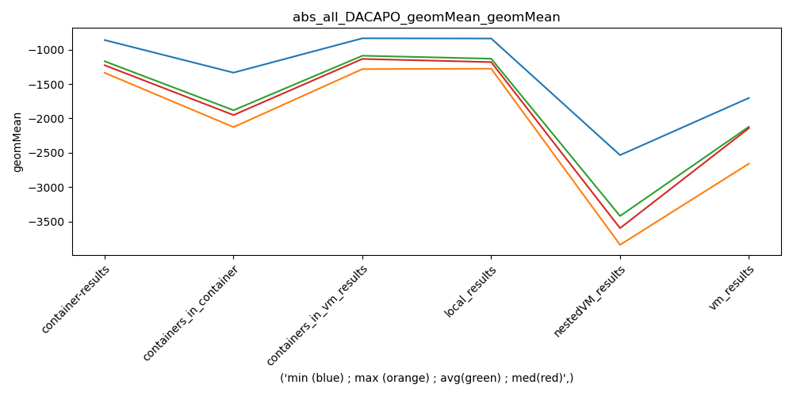
RADARGUNs1
all runs of one jdk are treated as INDIVIDUAL items
BasicOperations.Get.ResponseTimeMean
all RADARGUNs1 BasicOperations.Get.ResponseTimeMean where all runs of one jdk are treated as INDIVIDUAL items
MIN -1227.0 container-results
MIN -1194.0 containers_in_container
MIN -1758.0 containers_in_vm_results
MIN -1245.0 local_results
MIN -6035.0 nestedVM_results
MIN -1801.0 vm_results
MAX -1044.0 container-results
MAX -1049.0 containers_in_container
MAX -1486.0 containers_in_vm_results
MAX -1070.0 local_results
MAX -5654.0 nestedVM_results
MAX -1397.0 vm_results
AVG -1112.7473684210527 container-results
AVG -1112.8804347826087 containers_in_container
AVG -1615.3368421052633 containers_in_vm_results
AVG -1124.9764705882353 local_results
AVG -5829.894736842105 nestedVM_results
AVG -1517.6421052631579 vm_results
MED -1112.0 container-results
MED -1120.0 containers_in_container
MED -1599.0 containers_in_vm_results
MED -1119.0 local_results
MED -5812.0 nestedVM_results
MED -1496.0 vm_results

BasicOperations.Put.ResponseTimeMean
all RADARGUNs1 BasicOperations.Put.ResponseTimeMean where all runs of one jdk are treated as INDIVIDUAL items
MIN -4294.0 container-results
MIN -4385.0 containers_in_container
MIN -7065.0 containers_in_vm_results
MIN -4279.0 local_results
MIN -20742.0 nestedVM_results
MIN -7630.0 vm_results
MAX -3666.0 container-results
MAX -3708.0 containers_in_container
MAX -5813.0 containers_in_vm_results
MAX -3619.0 local_results
MAX -17179.0 nestedVM_results
MAX -6545.0 vm_results
AVG -3962.3368421052633 container-results
AVG -3972.4891304347825 containers_in_container
AVG -6444.042105263158 containers_in_vm_results
AVG -3935.2823529411767 local_results
AVG -18105.168421052633 nestedVM_results
AVG -6985.1894736842105 vm_results
MED -3972.0 container-results
MED -3987.0 containers_in_container
MED -6481.0 containers_in_vm_results
MED -3955.0 local_results
MED -18095.0 nestedVM_results
MED -6949.0 vm_results

geomMean of all keys (benchmark meassured relativre accuracy)
{'MIN': [2295.3731722750445, 2288.163018668032, 3524.2403436769177, 2308.106366699767, 11188.296116925043, 3706.970461171764], 'MAX': [1956.3496619980795, 1972.230209686486, 2939.067539203548, 1967.8236709624164, 9855.458690492289, 3023.7997618890045], 'AVG': [2099.780915679161, 2102.594927856397, 3226.344467769854, 2104.067501811653, 10273.812636384539, 3255.9204011314764], 'MED': [2101.6336502825607, 2113.1587730220367, 3219.1798644996525, 2103.721702126971, 10255.151876008467, 3224.236963996288]}
all RADARGUNs1 geomMean where all runs of one jdk are treated as INDIVIDUAL items
MIN 2295.3731722750445 container-results
MIN 2288.163018668032 containers_in_container
MIN 3524.2403436769177 containers_in_vm_results
MIN 2308.106366699767 local_results
MIN 11188.296116925043 nestedVM_results
MIN 3706.970461171764 vm_results
MAX 1956.3496619980795 container-results
MAX 1972.230209686486 containers_in_container
MAX 2939.067539203548 containers_in_vm_results
MAX 1967.8236709624164 local_results
MAX 9855.458690492289 nestedVM_results
MAX 3023.7997618890045 vm_results
AVG 2099.780915679161 container-results
AVG 2102.594927856397 containers_in_container
AVG 3226.344467769854 containers_in_vm_results
AVG 2104.067501811653 local_results
AVG 10273.812636384539 nestedVM_results
AVG 3255.9204011314764 vm_results
MED 2101.6336502825607 container-results
MED 2113.1587730220367 containers_in_container
MED 3219.1798644996525 containers_in_vm_results
MED 2103.721702126971 local_results
MED 10255.151876008467 nestedVM_results
MED 3224.236963996288 vm_results

all runs of one jdk were made AVARAGE before processing
BasicOperations.Get.ResponseTimeMean
all RADARGUNs1 BasicOperations.Get.ResponseTimeMean where all runs of one jdk were made AVARAGE before processing
MIN -1143.0 container-results
MIN -1140.4 containers_in_container
MIN -1669.4 containers_in_vm_results
MIN -1185.4 local_results
MIN -5899.2 nestedVM_results
MIN -1653.0 vm_results
MAX -1070.8 container-results
MAX -1080.0 containers_in_container
MAX -1531.2 containers_in_vm_results
MAX -1095.6 local_results
MAX -5773.2 nestedVM_results
MAX -1447.8 vm_results
AVG -1112.7473684210524 container-results
AVG -1113.1684210526316 containers_in_container
AVG -1615.3368421052633 containers_in_vm_results
AVG -1124.9764705882353 local_results
AVG -5829.894736842105 nestedVM_results
AVG -1517.6421052631576 vm_results
MED -1113.8 container-results
MED -1117.0 containers_in_container
MED -1619.6 containers_in_vm_results
MED -1123.4 local_results
MED -5832.2 nestedVM_results
MED -1480.8 vm_results
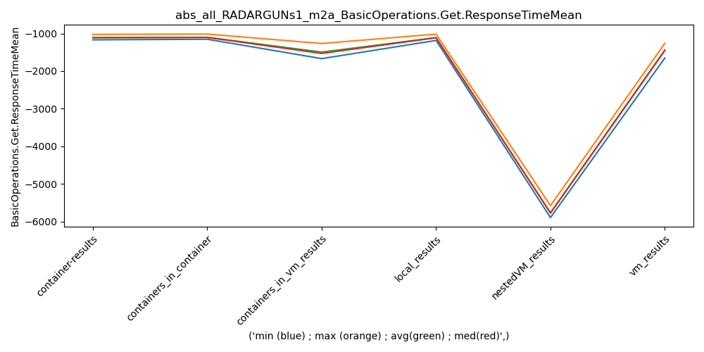
BasicOperations.Put.ResponseTimeMean
all RADARGUNs1 BasicOperations.Put.ResponseTimeMean where all runs of one jdk were made AVARAGE before processing
MIN -4157.0 container-results
MIN -4156.0 containers_in_container
MIN -6658.6 containers_in_vm_results
MIN -4082.0 local_results
MIN -18882.0 nestedVM_results
MIN -7370.8 vm_results
MAX -3766.4 container-results
MAX -3772.2 containers_in_container
MAX -6070.0 containers_in_vm_results
MAX -3720.2 local_results
MAX -17622.0 nestedVM_results
MAX -6681.0 vm_results
AVG -3962.336842105263 container-results
AVG -3971.1000000000004 containers_in_container
AVG -6444.042105263158 containers_in_vm_results
AVG -3935.2823529411767 local_results
AVG -18105.168421052633 nestedVM_results
AVG -6985.1894736842105 vm_results
MED -3975.0 container-results
MED -4009.0 containers_in_container
MED -6504.2 containers_in_vm_results
MED -4010.2 local_results
MED -18083.8 nestedVM_results
MED -6906.0 vm_results

geomMean of all keys (benchmark meassured relativre accuracy)
{'MIN': [2179.7823285823747, 2177.039825083593, 3334.0466163507676, 2199.7278922630408, 10554.084252079854, 3490.549011258831], 'MAX': [2008.248271504298, 2018.4092746516997, 3048.6692178719554, 2018.8737256203024, 10086.393329629773, 3110.104789231385], 'AVG': [2099.7809156791604, 2102.4992548969203, 3226.344467769854, 2104.067501811653, 10273.812636384539, 3255.920401131476], 'MED': [2104.1280854548754, 2116.141063350929, 3245.6435910309065, 2122.512350965242, 10269.777911912215, 3197.8750444631196]}
all RADARGUNs1 geomMean where all runs of one jdk were made AVARAGE before processing
MIN 2179.7823285823747 container-results
MIN 2177.039825083593 containers_in_container
MIN 3334.0466163507676 containers_in_vm_results
MIN 2199.7278922630408 local_results
MIN 10554.084252079854 nestedVM_results
MIN 3490.549011258831 vm_results
MAX 2008.248271504298 container-results
MAX 2018.4092746516997 containers_in_container
MAX 3048.6692178719554 containers_in_vm_results
MAX 2018.8737256203024 local_results
MAX 10086.393329629773 nestedVM_results
MAX 3110.104789231385 vm_results
AVG 2099.7809156791604 container-results
AVG 2102.4992548969203 containers_in_container
AVG 3226.344467769854 containers_in_vm_results
AVG 2104.067501811653 local_results
AVG 10273.812636384539 nestedVM_results
AVG 3255.920401131476 vm_results
MED 2104.1280854548754 container-results
MED 2116.141063350929 containers_in_container
MED 3245.6435910309065 containers_in_vm_results
MED 2122.512350965242 local_results
MED 10269.777911912215 nestedVM_results
MED 3197.8750444631196 vm_results
all runs of one jdk were made MEDIAN before processing
BasicOperations.Get.ResponseTimeMean
all RADARGUNs1 BasicOperations.Get.ResponseTimeMean where all runs of one jdk were made MEDIAN before processing
MIN -1146.0 container-results
MIN -1141.0 containers_in_container
MIN -1738.0 containers_in_vm_results
MIN -1185.0 local_results
MIN -5927.0 nestedVM_results
MIN -1682.0 vm_results
MAX -1064.0 container-results
MAX -1074.0 containers_in_container
MAX -1526.0 containers_in_vm_results
MAX -1086.0 local_results
MAX -5721.0 nestedVM_results
MAX -1437.0 vm_results
AVG -1111.0 container-results
AVG -1111.842105263158 containers_in_container
AVG -1616.421052631579 containers_in_vm_results
AVG -1123.7058823529412 local_results
AVG -5819.684210526316 nestedVM_results
AVG -1509.3157894736842 vm_results
MED -1114.0 container-results
MED -1123.0 containers_in_container
MED -1608.0 containers_in_vm_results
MED -1123.0 local_results
MED -5820.0 nestedVM_results
MED -1482.0 vm_results

BasicOperations.Put.ResponseTimeMean
all RADARGUNs1 BasicOperations.Put.ResponseTimeMean where all runs of one jdk were made MEDIAN before processing
MIN -4159.0 container-results
MIN -4108.0 containers_in_container
MIN -6675.0 containers_in_vm_results
MIN -4084.0 local_results
MIN -18593.0 nestedVM_results
MIN -7372.0 vm_results
MAX -3773.0 container-results
MAX -3742.0 containers_in_container
MAX -6025.0 containers_in_vm_results
MAX -3745.0 local_results
MAX -17580.0 nestedVM_results
MAX -6708.0 vm_results
AVG -3963.4210526315787 container-results
AVG -3966.1052631578946 containers_in_container
AVG -6414.421052631579 containers_in_vm_results
AVG -3917.294117647059 local_results
AVG -18045.473684210527 nestedVM_results
AVG -6979.473684210527 vm_results
MED -3972.0 container-results
MED -4002.0 containers_in_container
MED -6488.0 containers_in_vm_results
MED -3973.0 local_results
MED -18118.0 nestedVM_results
MED -6873.0 vm_results

geomMean of all keys (benchmark meassured relativre accuracy)
{'MIN': [2183.1660495711267, 2165.000692840536, 3406.0460948143377, 2199.895452061302, 10497.65264237677, 3521.3213429052453], 'MAX': [2003.6147334255654, 2004.721427031696, 3032.1856803302794, 2016.6977959029955, 10028.717764500107, 3104.7376700777795], 'AVG': [2098.4186401844804, 2099.924480900388, 3220.000812098795, 2098.06731133836, 10247.875793132358, 3245.647829601205], 'MED': [2103.5227595631095, 2119.963678934146, 3229.969659300223, 2112.2686855606225, 10268.727282385096, 3191.517820724177]}
all RADARGUNs1 geomMean where all runs of one jdk were made MEDIAN before processing
MIN 2183.1660495711267 container-results
MIN 2165.000692840536 containers_in_container
MIN 3406.0460948143377 containers_in_vm_results
MIN 2199.895452061302 local_results
MIN 10497.65264237677 nestedVM_results
MIN 3521.3213429052453 vm_results
MAX 2003.6147334255654 container-results
MAX 2004.721427031696 containers_in_container
MAX 3032.1856803302794 containers_in_vm_results
MAX 2016.6977959029955 local_results
MAX 10028.717764500107 nestedVM_results
MAX 3104.7376700777795 vm_results
AVG 2098.4186401844804 container-results
AVG 2099.924480900388 containers_in_container
AVG 3220.000812098795 containers_in_vm_results
AVG 2098.06731133836 local_results
AVG 10247.875793132358 nestedVM_results
AVG 3245.647829601205 vm_results
MED 2103.5227595631095 container-results
MED 2119.963678934146 containers_in_container
MED 3229.969659300223 containers_in_vm_results
MED 2112.2686855606225 local_results
MED 10268.727282385096 nestedVM_results
MED 3191.517820724177 vm_results
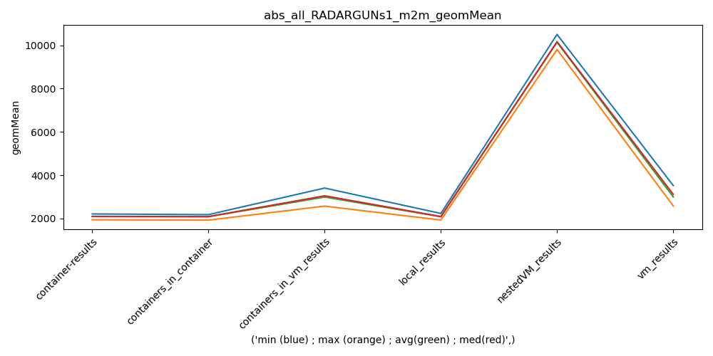
geomMean of all metrics from geomMean of all keys
{'MIN': [2218.7978308016695, 2209.380204710857, 3420.549679642809, 2235.3332292951673, 10742.175311280746, 3571.682464553169], 'MAX': [1989.2652648583507, 1998.3595213166138, 3006.2508842435323, 2000.992158301223, 9989.706230807271, 3079.292804683887], 'AVG': [2099.326725611759, 2101.6725237908263, 3224.228528482602, 2102.06553410238, 10265.159736292124, 3252.492603138929], 'MED': [2103.0945634003197, 2116.41933942862, 3231.5794494499632, 2112.8202856663165, 10264.55019487115, 3204.512023504125]}
all RADARGUNs1 geomMean geomMean
MIN 2218.7978308016695 container-results
MIN 2209.380204710857 containers_in_container
MIN 3420.549679642809 containers_in_vm_results
MIN 2235.3332292951673 local_results
MIN 10742.175311280746 nestedVM_results
MIN 3571.682464553169 vm_results
MAX 1989.2652648583507 container-results
MAX 1998.3595213166138 containers_in_container
MAX 3006.2508842435323 containers_in_vm_results
MAX 2000.992158301223 local_results
MAX 9989.706230807271 nestedVM_results
MAX 3079.292804683887 vm_results
AVG 2099.326725611759 container-results
AVG 2101.6725237908263 containers_in_container
AVG 3224.228528482602 containers_in_vm_results
AVG 2102.06553410238 local_results
AVG 10265.159736292124 nestedVM_results
AVG 3252.492603138929 vm_results
MED 2103.0945634003197 container-results
MED 2116.41933942862 containers_in_container
MED 3231.5794494499632 containers_in_vm_results
MED 2112.8202856663165 local_results
MED 10264.55019487115 nestedVM_results
MED 3204.512023504125 vm_results
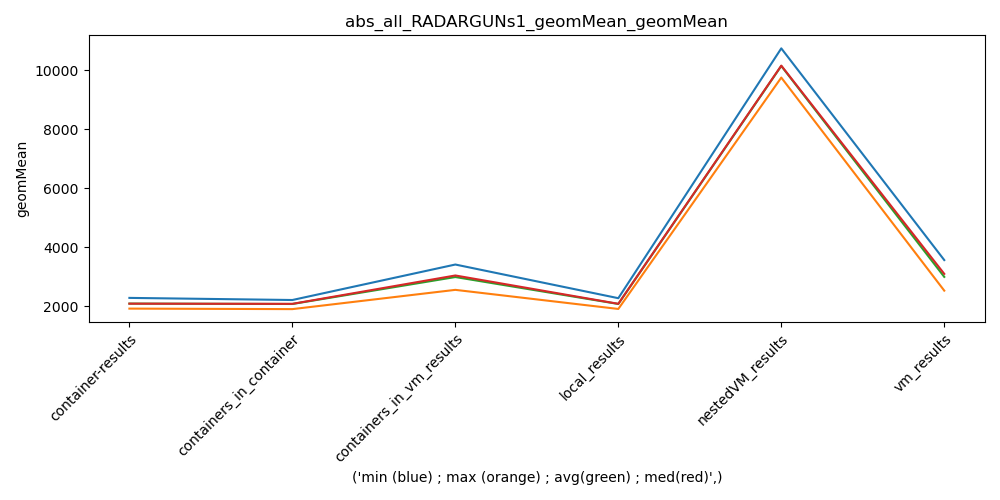
RADARGUNs3
all runs of one jdk are treated as INDIVIDUAL items
BasicOperations.Get.ResponseTimeMean
all RADARGUNs3 BasicOperations.Get.ResponseTimeMean where all runs of one jdk are treated as INDIVIDUAL items
MIN -65879.0 container-results
MIN -69588.0 containers_in_container
MIN -169475.0 containers_in_vm_results
MIN -67748.0 local_results
MIN -134533.0 vm_results
MAX -60078.0 container-results
MAX -63517.0 containers_in_container
MAX -151597.0 containers_in_vm_results
MAX -58937.0 local_results
MAX -113370.0 vm_results
AVG -63544.82105263158 container-results
AVG -67055.08421052631 containers_in_container
AVG -160532.25274725276 containers_in_vm_results
AVG -63625.717647058824 local_results
AVG -122405.6105263158 vm_results
MED -64365.0 container-results
MED -67576.0 containers_in_container
MED -160340.0 containers_in_vm_results
MED -63584.0 local_results
MED -122131.0 vm_results
BasicOperations.Put.ResponseTimeMean
all RADARGUNs3 BasicOperations.Put.ResponseTimeMean where all runs of one jdk are treated as INDIVIDUAL items
MIN -273808.0 container-results
MIN -286594.0 containers_in_container
MIN -675993.0 containers_in_vm_results
MIN -282502.0 local_results
MIN -519494.0 vm_results
MAX -244154.0 container-results
MAX -257407.0 containers_in_container
MAX -610465.0 containers_in_vm_results
MAX -240993.0 local_results
MAX -437027.0 vm_results
AVG -258662.38947368422 container-results
AVG -272180.0842105263 containers_in_container
AVG -644907.7582417582 containers_in_vm_results
AVG -260222.9176470588 local_results
AVG -472691.63157894736 vm_results
MED -259772.0 container-results
MED -272844.0 containers_in_container
MED -643841.0 containers_in_vm_results
MED -257664.0 local_results
MED -471874.0 vm_results

geomMean of all keys (benchmark meassured relativre accuracy)
{'MIN': [134306.35588831975, 141221.46887778785, 338472.91424130235, 138343.5777186639, 264365.4408238717, 1.0], 'MAX': [121112.69137460367, 127866.02527254846, 304211.542524277, 119178.0367391576, 222588.74857009284, 1.0], 'AVG': [128205.519585357, 135096.47836699884, 321758.4423829934, 128673.50109290415, 240541.2807692297, 1.0], 'MED': [129306.70817865561, 135785.51522161707, 321299.65132256213, 127997.29597143839, 240063.41556763704, 1.0]}
all RADARGUNs3 geomMean where all runs of one jdk are treated as INDIVIDUAL items
MIN 134306.35588831975 container-results
MIN 141221.46887778785 containers_in_container
MIN 338472.91424130235 containers_in_vm_results
MIN 138343.5777186639 local_results
MIN 264365.4408238717 nestedVM_results
MIN 1.0 vm_results
MAX 121112.69137460367 container-results
MAX 127866.02527254846 containers_in_container
MAX 304211.542524277 containers_in_vm_results
MAX 119178.0367391576 local_results
MAX 222588.74857009284 nestedVM_results
MAX 1.0 vm_results
AVG 128205.519585357 container-results
AVG 135096.47836699884 containers_in_container
AVG 321758.4423829934 containers_in_vm_results
AVG 128673.50109290415 local_results
AVG 240541.2807692297 nestedVM_results
AVG 1.0 vm_results
MED 129306.70817865561 container-results
MED 135785.51522161707 containers_in_container
MED 321299.65132256213 containers_in_vm_results
MED 127997.29597143839 local_results
MED 240063.41556763704 nestedVM_results
MED 1.0 vm_results
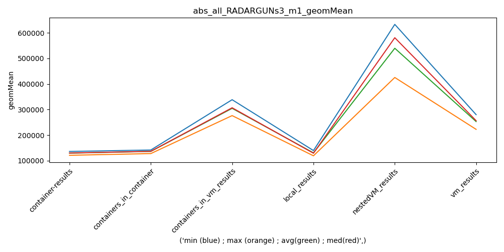
all runs of one jdk were made AVARAGE before processing
BasicOperations.Get.ResponseTimeMean
all RADARGUNs3 BasicOperations.Get.ResponseTimeMean where all runs of one jdk were made AVARAGE before processing
MIN -65443.6 container-results
MIN -68789.6 containers_in_container
MIN -165422.6 containers_in_vm_results
MIN -67080.6 local_results
MIN -130387.8 vm_results
MAX -60484.8 container-results
MAX -64131.2 containers_in_container
MAX -155344.66666666666 containers_in_vm_results
MAX -59568.8 local_results
MAX -116948.6 vm_results
AVG -63544.82105263158 container-results
AVG -67055.08421052631 containers_in_container
AVG -160476.61403508772 containers_in_vm_results
AVG -63625.717647058824 local_results
AVG -122405.61052631577 vm_results
MED -64268.4 container-results
MED -67560.4 containers_in_container
MED -160134.8 containers_in_vm_results
MED -63607.8 local_results
MED -121934.2 vm_results

BasicOperations.Put.ResponseTimeMean
all RADARGUNs3 BasicOperations.Put.ResponseTimeMean where all runs of one jdk were made AVARAGE before processing
MIN -271011.4 container-results
MIN -285377.6 containers_in_container
MIN -665989.4 containers_in_vm_results
MIN -279676.2 local_results
MIN -502570.0 vm_results
MAX -245363.4 container-results
MAX -258425.2 containers_in_container
MAX -622153.6666666666 containers_in_vm_results
MAX -242063.6 local_results
MAX -450710.6 vm_results
AVG -258662.38947368422 container-results
AVG -272180.0842105263 containers_in_container
AVG -644600.4842105263 containers_in_vm_results
AVG -260222.91764705884 local_results
AVG -472691.63157894736 vm_results
MED -259151.0 container-results
MED -272649.0 containers_in_container
MED -641453.4 containers_in_vm_results
MED -257406.0 local_results
MED -472884.0 vm_results
geomMean of all keys (benchmark meassured relativre accuracy)
{'MIN': [133176.4305612671, 140110.7096297781, 331918.20998619526, 136970.24239490854, 255986.32120877085, 1.0], 'MAX': [121822.64229739888, 128736.62332933857, 310883.0229584397, 120080.9650847294, 229586.5276429782, 1.0], 'AVG': [128205.519585357, 135096.47836699884, 321626.0299034941, 128673.50109290416, 240541.28076922966, 1.0], 'MED': [129055.10500712476, 135721.31556833658, 320498.0685094997, 127957.13878795509, 240126.49215111605, 1.0]}
all RADARGUNs3 geomMean where all runs of one jdk were made AVARAGE before processing
MIN 133176.4305612671 container-results
MIN 140110.7096297781 containers_in_container
MIN 331918.20998619526 containers_in_vm_results
MIN 136970.24239490854 local_results
MIN 255986.32120877085 nestedVM_results
MIN 1.0 vm_results
MAX 121822.64229739888 container-results
MAX 128736.62332933857 containers_in_container
MAX 310883.0229584397 containers_in_vm_results
MAX 120080.9650847294 local_results
MAX 229586.5276429782 nestedVM_results
MAX 1.0 vm_results
AVG 128205.519585357 container-results
AVG 135096.47836699884 containers_in_container
AVG 321626.0299034941 containers_in_vm_results
AVG 128673.50109290416 local_results
AVG 240541.28076922966 nestedVM_results
AVG 1.0 vm_results
MED 129055.10500712476 container-results
MED 135721.31556833658 containers_in_container
MED 320498.0685094997 containers_in_vm_results
MED 127957.13878795509 local_results
MED 240126.49215111605 nestedVM_results
MED 1.0 vm_results
all runs of one jdk were made MEDIAN before processing
BasicOperations.Get.ResponseTimeMean
all RADARGUNs3 BasicOperations.Get.ResponseTimeMean where all runs of one jdk were made MEDIAN before processing
MIN -65751.0 container-results
MIN -68914.0 containers_in_container
MIN -165606.0 containers_in_vm_results
MIN -67162.0 local_results
MIN -130740.0 vm_results
MAX -60613.0 container-results
MAX -64223.0 containers_in_container
MAX -155328.0 containers_in_vm_results
MAX -59702.0 local_results
MAX -116443.0 vm_results
AVG -63582.05263157895 container-results
AVG -67077.42105263157 containers_in_container
AVG -160407.36842105264 containers_in_vm_results
AVG -63627.882352941175 local_results
AVG -121742.73684210527 vm_results
MED -64365.0 container-results
MED -67627.0 containers_in_container
MED -159645.0 containers_in_vm_results
MED -63451.0 local_results
MED -121685.0 vm_results

BasicOperations.Put.ResponseTimeMean
all RADARGUNs3 BasicOperations.Put.ResponseTimeMean where all runs of one jdk were made MEDIAN before processing
MIN -270718.0 container-results
MIN -285257.0 containers_in_container
MIN -670610.0 containers_in_vm_results
MIN -279819.0 local_results
MIN -505390.0 vm_results
MAX -244938.0 container-results
MAX -258832.0 containers_in_container
MAX -623482.0 containers_in_vm_results
MAX -241563.0 local_results
MAX -446167.0 vm_results
AVG -258513.42105263157 container-results
AVG -272115.3157894737 containers_in_container
AVG -643711.947368421 containers_in_vm_results
AVG -260210.23529411765 local_results
AVG -470363.0 vm_results
MED -259725.0 container-results
MED -272844.0 containers_in_container
MED -640370.0 containers_in_vm_results
MED -257664.0 local_results
MED -467849.0 vm_results
geomMean of all keys (benchmark meassured relativre accuracy)
{'MIN': [133416.5627574028, 140207.70627180234, 333252.21628670377, 137088.3061314859, 257049.97296245725, 1.0], 'MAX': [121845.91496640336, 128930.08778403899, 311198.02714027604, 120090.7749412918, 227932.06001131126, 1.0], 'AVG': [128206.13847760158, 135102.90008760113, 321334.9335172875, 128672.55433201464, 239297.46954212274, 1.0], 'MED': [129295.01005452608, 135836.74461646966, 319737.1868425692, 127863.35856687013, 238600.5145950025, 1.0]}
all RADARGUNs3 geomMean where all runs of one jdk were made MEDIAN before processing
MIN 133416.5627574028 container-results
MIN 140207.70627180234 containers_in_container
MIN 333252.21628670377 containers_in_vm_results
MIN 137088.3061314859 local_results
MIN 257049.97296245725 nestedVM_results
MIN 1.0 vm_results
MAX 121845.91496640336 container-results
MAX 128930.08778403899 containers_in_container
MAX 311198.02714027604 containers_in_vm_results
MAX 120090.7749412918 local_results
MAX 227932.06001131126 nestedVM_results
MAX 1.0 vm_results
AVG 128206.13847760158 container-results
AVG 135102.90008760113 containers_in_container
AVG 321334.9335172875 containers_in_vm_results
AVG 128672.55433201464 local_results
AVG 239297.46954212274 nestedVM_results
AVG 1.0 vm_results
MED 129295.01005452608 container-results
MED 135836.74461646966 containers_in_container
MED 319737.1868425692 containers_in_vm_results
MED 127863.35856687013 local_results
MED 238600.5145950025 nestedVM_results
MED 1.0 vm_results
geomMean of all metrics from geomMean of all keys
{'MIN': [133632.23374058423, 140512.39852914395, 334535.86323206365, 137465.97365850385, 259107.31124822205, 1.0], 'MAX': [121593.27274761074, 128510.07758657589, 308747.3057937596, 119782.4930695676, 226682.68130065265, 1.0], 'AVG': [128205.72588243982, 135098.61890661684, 321573.08660549606, 128673.18550516688, 240125.96034413498, 1.0], 'MED': [129218.88903825096, 135781.18359017555, 320511.0007011356, 127939.2521314492, 239595.7689221424, 1.0]}
all RADARGUNs3 geomMean geomMean
MIN 133632.23374058423 container-results
MIN 140512.39852914395 containers_in_container
MIN 334535.86323206365 containers_in_vm_results
MIN 137465.97365850385 local_results
MIN 259107.31124822205 nestedVM_results
MIN 1.0 vm_results
MAX 121593.27274761074 container-results
MAX 128510.07758657589 containers_in_container
MAX 308747.3057937596 containers_in_vm_results
MAX 119782.4930695676 local_results
MAX 226682.68130065265 nestedVM_results
MAX 1.0 vm_results
AVG 128205.72588243982 container-results
AVG 135098.61890661684 containers_in_container
AVG 321573.08660549606 containers_in_vm_results
AVG 128673.18550516688 local_results
AVG 240125.96034413498 nestedVM_results
AVG 1.0 vm_results
MED 129218.88903825096 container-results
MED 135781.18359017555 containers_in_container
MED 320511.0007011356 containers_in_vm_results
MED 127939.2521314492 local_results
MED 239595.7689221424 nestedVM_results
MED 1.0 vm_results
geomMean of all benchamrks from geomMean of all metrics and all keys
{'MIN': [7063.720319342355, 8257.98575710848, 10527.857677528811, 7070.543611822157, 21219.78552906967, 192.63908157332565], 'MAX': [6813.253731581098, 8173.6807282009995, 10600.703940219757, 6738.394530247691, 20560.389348056397, 189.62368744180745], 'AVG': [6936.386759777449, 8229.034932911347, 10606.523536246566, 6885.4609191883665, 20767.891045798035, 190.12729604655883], 'MED': [6958.671864186723, 8263.337120535109, 10626.820292257822, 6894.570932335523, 20768.726352092668, 189.89449349649624]}
all geomMean geomMean geomMean
MIN 7063.720319342355 container-results
MIN 8257.98575710848 containers_in_container
MIN 10527.857677528811 containers_in_vm_results
MIN 7070.543611822157 local_results
MIN 21219.78552906967 nestedVM_results
MIN 192.63908157332565 vm_results
MAX 6813.253731581098 container-results
MAX 8173.6807282009995 containers_in_container
MAX 10600.703940219757 containers_in_vm_results
MAX 6738.394530247691 local_results
MAX 20560.389348056397 nestedVM_results
MAX 189.62368744180745 vm_results
AVG 6936.386759777449 container-results
AVG 8229.034932911347 containers_in_container
AVG 10606.523536246566 containers_in_vm_results
AVG 6885.4609191883665 local_results
AVG 20767.891045798035 nestedVM_results
AVG 190.12729604655883 vm_results
MED 6958.671864186723 container-results
MED 8263.337120535109 containers_in_container
MED 10626.820292257822 containers_in_vm_results
MED 6894.570932335523 local_results
MED 20768.726352092668 nestedVM_results
MED 189.89449349649624 vm_results
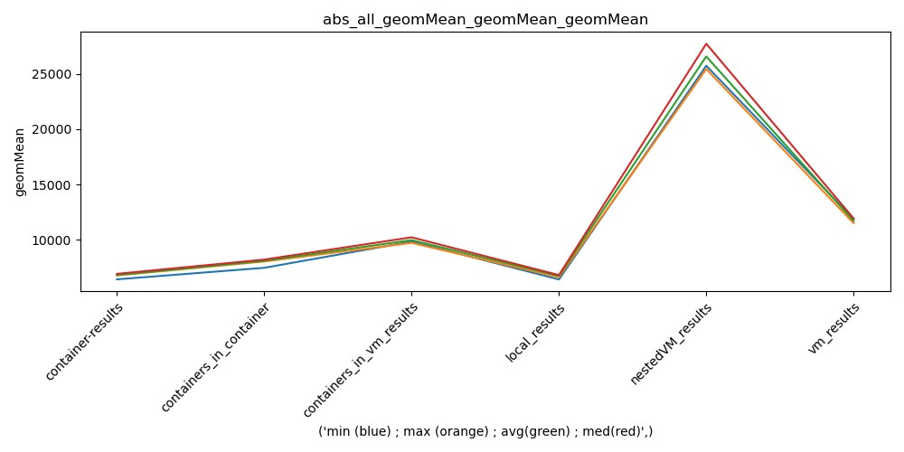
java-1.8.0
DACAPO
all runs of one jdk are treated as INDIVIDUAL items
geom
java-1.8.0 DACAPO geom where all runs of one jdk are treated as INDIVIDUAL items
MIN -1167.0 container-results
MIN -1814.0 containers_in_container
MIN -1039.0 containers_in_vm_results
MIN -1132.0 local_results
MIN -3332.0 nestedVM_results
MIN -1961.0 vm_results
MAX -1269.0 container-results
MAX -2096.0 containers_in_container
MAX -1347.0 containers_in_vm_results
MAX -1224.0 local_results
MAX -3685.0 nestedVM_results
MAX -2172.0 vm_results
AVG -1210.3529411764705 container-results
AVG -1923.1538461538462 containers_in_container
AVG -1164.7083333333333 containers_in_vm_results
AVG -1174.5142857142857 local_results
AVG -3545.8214285714284 nestedVM_results
AVG -2052.4193548387098 vm_results
MED -1209.0 container-results
MED -1914.0 containers_in_container
MED -1158.0 containers_in_vm_results
MED -1175.0 local_results
MED -3546.0 nestedVM_results
MED -2048.0 vm_results

geomMean of all keys (benchmark meassured relativre accuracy)
{'MIN': [1167.0, 1814.0, 1039.0, 1132.0, 3332.0, 1961.0], 'MAX': [1269.0, 2096.0, 1347.0, 1224.0, 3685.0, 2172.0], 'AVG': [1210.3529411764705, 1923.1538461538462, 1164.7083333333333, 1174.5142857142857, 3545.8214285714284, 2052.4193548387098], 'MED': [1209.0, 1914.0, 1158.0, 1175.0, 3546.0, 2048.0]}
java-1.8.0 DACAPO geomMean where all runs of one jdk are treated as INDIVIDUAL items
MIN -1167.0 container-results
MIN -1814.0 containers_in_container
MIN -1039.0 containers_in_vm_results
MIN -1132.0 local_results
MIN -3332.0 nestedVM_results
MIN -1961.0 vm_results
MAX -1269.0 container-results
MAX -2096.0 containers_in_container
MAX -1347.0 containers_in_vm_results
MAX -1224.0 local_results
MAX -3685.0 nestedVM_results
MAX -2172.0 vm_results
AVG -1210.3529411764705 container-results
AVG -1923.1538461538462 containers_in_container
AVG -1164.7083333333333 containers_in_vm_results
AVG -1174.5142857142857 local_results
AVG -3545.8214285714284 nestedVM_results
AVG -2052.4193548387098 vm_results
MED -1209.0 container-results
MED -1914.0 containers_in_container
MED -1158.0 containers_in_vm_results
MED -1175.0 local_results
MED -3546.0 nestedVM_results
MED -2048.0 vm_results
all runs of one jdk were made AVARAGE before processing
geom
java-1.8.0 DACAPO geom where all runs of one jdk were made AVARAGE before processing
MIN -1197.4 container-results
MIN -1814.0 containers_in_container
MIN -1131.6666666666667 containers_in_vm_results
MIN -1159.2 local_results
MIN -3477.75 nestedVM_results
MIN -2026.2 vm_results
MAX -1235.0 container-results
MAX -1965.0 containers_in_container
MAX -1223.2 containers_in_vm_results
MAX -1186.4 local_results
MAX -3596.0 nestedVM_results
MAX -2086.0 vm_results
AVG -1210.0857142857144 container-results
AVG -1908.5714285714287 containers_in_container
AVG -1160.2095238095237 containers_in_vm_results
AVG -1174.5142857142857 local_results
AVG -3547.4928571428572 nestedVM_results
AVG -2050.3142857142857 vm_results
MED -1208.0 container-results
MED -1924.0 containers_in_container
MED -1152.6666666666667 containers_in_vm_results
MED -1174.2 local_results
MED -3549.2 nestedVM_results
MED -2045.0 vm_results
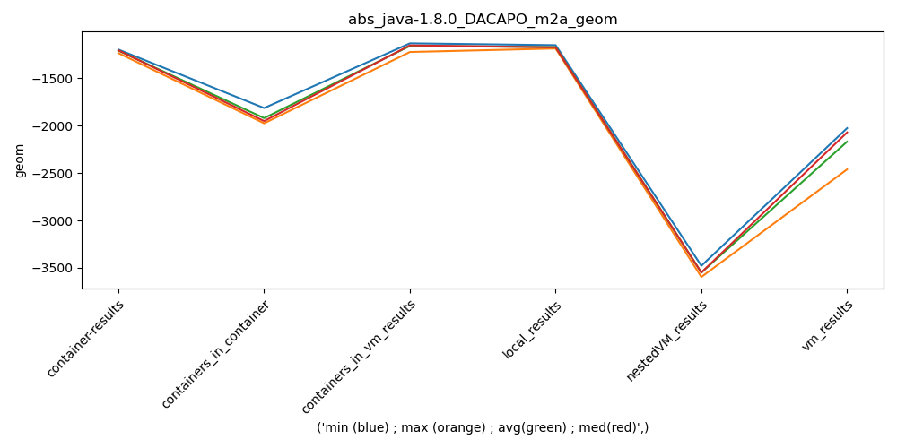
geomMean of all keys (benchmark meassured relativre accuracy)
{'MIN': [1197.4, 1814.0, 1131.6666666666667, 1159.2, 3477.75, 2026.2], 'MAX': [1235.0, 1965.0, 1223.2, 1186.4, 3596.0, 2086.0], 'AVG': [1210.0857142857144, 1908.5714285714287, 1160.2095238095237, 1174.5142857142857, 3547.4928571428572, 2050.3142857142857], 'MED': [1208.0, 1924.0, 1152.6666666666667, 1174.2, 3549.2, 2045.0]}
java-1.8.0 DACAPO geomMean where all runs of one jdk were made AVARAGE before processing
MIN -1197.4 container-results
MIN -1814.0 containers_in_container
MIN -1131.6666666666667 containers_in_vm_results
MIN -1159.2 local_results
MIN -3477.75 nestedVM_results
MIN -2026.2 vm_results
MAX -1235.0 container-results
MAX -1965.0 containers_in_container
MAX -1223.2 containers_in_vm_results
MAX -1186.4 local_results
MAX -3596.0 nestedVM_results
MAX -2086.0 vm_results
AVG -1210.0857142857144 container-results
AVG -1908.5714285714287 containers_in_container
AVG -1160.2095238095237 containers_in_vm_results
AVG -1174.5142857142857 local_results
AVG -3547.4928571428572 nestedVM_results
AVG -2050.3142857142857 vm_results
MED -1208.0 container-results
MED -1924.0 containers_in_container
MED -1152.6666666666667 containers_in_vm_results
MED -1174.2 local_results
MED -3549.2 nestedVM_results
MED -2045.0 vm_results
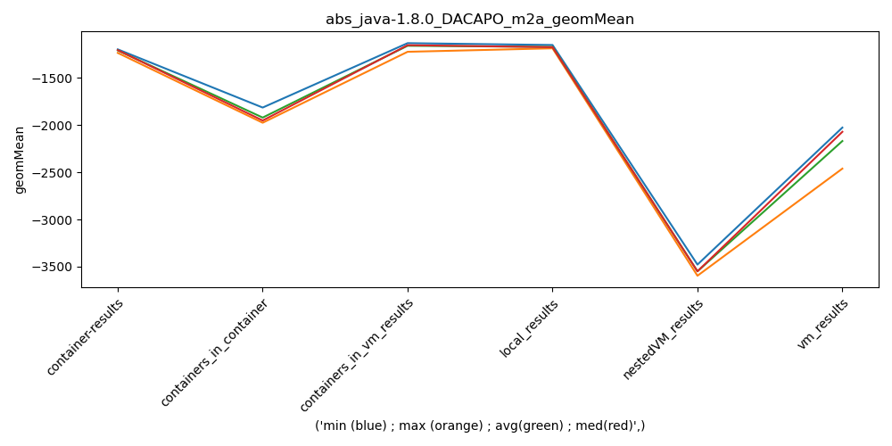
all runs of one jdk were made MEDIAN before processing
geom
java-1.8.0 DACAPO geom where all runs of one jdk were made MEDIAN before processing
MIN -1202.0 container-results
MIN -1814.0 containers_in_container
MIN -1145.0 containers_in_vm_results
MIN -1160.0 local_results
MIN -3491.0 nestedVM_results
MIN -2018.0 vm_results
MAX -1230.0 container-results
MAX -2096.0 containers_in_container
MAX -1189.0 containers_in_vm_results
MAX -1182.0 local_results
MAX -3608.0 nestedVM_results
MAX -2102.0 vm_results
AVG -1212.142857142857 container-results
AVG -1933.7142857142858 containers_in_container
AVG -1156.4285714285713 containers_in_vm_results
AVG -1174.142857142857 local_results
AVG -3554.8571428571427 nestedVM_results
AVG -2048.285714285714 vm_results
MED -1209.0 container-results
MED -1937.0 containers_in_container
MED -1150.0 containers_in_vm_results
MED -1175.0 local_results
MED -3546.0 nestedVM_results
MED -2036.0 vm_results

geomMean of all keys (benchmark meassured relativre accuracy)
{'MIN': [1202.0, 1814.0, 1145.0, 1160.0, 3491.0, 2018.0], 'MAX': [1230.0, 2096.0, 1189.0, 1182.0, 3608.0, 2102.0], 'AVG': [1212.142857142857, 1933.7142857142858, 1156.4285714285713, 1174.142857142857, 3554.8571428571427, 2048.285714285714], 'MED': [1209.0, 1937.0, 1150.0, 1175.0, 3546.0, 2036.0]}
java-1.8.0 DACAPO geomMean where all runs of one jdk were made MEDIAN before processing
MIN -1202.0 container-results
MIN -1814.0 containers_in_container
MIN -1145.0 containers_in_vm_results
MIN -1160.0 local_results
MIN -3491.0 nestedVM_results
MIN -2018.0 vm_results
MAX -1230.0 container-results
MAX -2096.0 containers_in_container
MAX -1189.0 containers_in_vm_results
MAX -1182.0 local_results
MAX -3608.0 nestedVM_results
MAX -2102.0 vm_results
AVG -1212.142857142857 container-results
AVG -1933.7142857142858 containers_in_container
AVG -1156.4285714285713 containers_in_vm_results
AVG -1174.142857142857 local_results
AVG -3554.8571428571427 nestedVM_results
AVG -2048.285714285714 vm_results
MED -1209.0 container-results
MED -1937.0 containers_in_container
MED -1150.0 containers_in_vm_results
MED -1175.0 local_results
MED -3546.0 nestedVM_results
MED -2036.0 vm_results

geomMean of all metrics from geomMean of all keys
{'MIN': [1188.6979831396607, 1813.9999999999993, 1104.1968894223428, 1150.325982949341, 3432.820277952203, 2001.5219421855506], 'MAX': [1244.54679396356, 2051.3906439724838, 1251.264070730587, 1197.3193763395182, 3629.45348368577, 2119.6733791342162], 'AVG': [1210.8601598850476, 1921.785521780482, 1160.443875197425, 1174.3904631370017, 3549.3883066785656, 2050.3390903976106], 'MED': [1208.666574721094, 1924.976981295558, 1153.5507644311176, 1174.733272790336, 3547.066345965114, 2042.9936311983963]}
java-1.8.0 DACAPO geomMean geomMean
MIN -1188.6979831396607 container-results
MIN -1813.9999999999993 containers_in_container
MIN -1104.1968894223428 containers_in_vm_results
MIN -1150.325982949341 local_results
MIN -3432.820277952203 nestedVM_results
MIN -2001.5219421855506 vm_results
MAX -1244.54679396356 container-results
MAX -2051.3906439724838 containers_in_container
MAX -1251.264070730587 containers_in_vm_results
MAX -1197.3193763395182 local_results
MAX -3629.45348368577 nestedVM_results
MAX -2119.6733791342162 vm_results
AVG -1210.8601598850476 container-results
AVG -1921.785521780482 containers_in_container
AVG -1160.443875197425 containers_in_vm_results
AVG -1174.3904631370017 local_results
AVG -3549.3883066785656 nestedVM_results
AVG -2050.3390903976106 vm_results
MED -1208.666574721094 container-results
MED -1924.976981295558 containers_in_container
MED -1153.5507644311176 containers_in_vm_results
MED -1174.733272790336 local_results
MED -3547.066345965114 nestedVM_results
MED -2042.9936311983963 vm_results

RADARGUNs1
all runs of one jdk are treated as INDIVIDUAL items
BasicOperations.Get.ResponseTimeMean
java-1.8.0 RADARGUNs1 BasicOperations.Get.ResponseTimeMean where all runs of one jdk are treated as INDIVIDUAL items
MIN -1227.0 container-results
MIN -1190.0 containers_in_container
MIN -1758.0 containers_in_vm_results
MIN -1245.0 local_results
MIN -6035.0 nestedVM_results
MIN -1801.0 vm_results
MAX -1044.0 container-results
MAX -1054.0 containers_in_container
MAX -1515.0 containers_in_vm_results
MAX -1071.0 local_results
MAX -5684.0 nestedVM_results
MAX -1451.0 vm_results
AVG -1110.6857142857143 container-results
AVG -1117.5714285714287 containers_in_container
AVG -1634.7714285714285 containers_in_vm_results
AVG -1149.2 local_results
AVG -5828.542857142857 nestedVM_results
AVG -1594.942857142857 vm_results
MED -1109.0 container-results
MED -1123.0 containers_in_container
MED -1598.0 containers_in_vm_results
MED -1150.0 local_results
MED -5805.0 nestedVM_results
MED -1564.0 vm_results

BasicOperations.Put.ResponseTimeMean
java-1.8.0 RADARGUNs1 BasicOperations.Put.ResponseTimeMean where all runs of one jdk are treated as INDIVIDUAL items
MIN -4255.0 container-results
MIN -4385.0 containers_in_container
MIN -6812.0 containers_in_vm_results
MIN -4153.0 local_results
MIN -19262.0 nestedVM_results
MIN -7630.0 vm_results
MAX -3840.0 container-results
MAX -3835.0 containers_in_container
MAX -6286.0 containers_in_vm_results
MAX -3934.0 local_results
MAX -17851.0 nestedVM_results
MAX -7035.0 vm_results
AVG -4031.4 container-results
AVG -4046.057142857143 containers_in_container
AVG -6535.085714285714 containers_in_vm_results
AVG -4036.04 local_results
AVG -18244.885714285716 nestedVM_results
AVG -7295.085714285714 vm_results
MED -4027.0 container-results
MED -4045.0 containers_in_container
MED -6532.0 containers_in_vm_results
MED -4035.0 local_results
MED -18188.0 nestedVM_results
MED -7294.0 vm_results

geomMean of all keys (benchmark meassured relativre accuracy)
{'MIN': [2284.9256005393263, 2284.327034380148, 3460.5629599820895, 2273.8700490573333, 10781.7517129639, 3706.970461171764], 'MAX': [2002.2387470029641, 2010.4949639330111, 3085.9828256165006, 2052.6358663922833, 10072.987838769588, 3194.9624410937918], 'AVG': [2116.038371242693, 2126.4425365441903, 3268.5427041694884, 2153.6520536056887, 10312.18203434112, 3411.047471414741], 'MED': [2113.277785810469, 2131.32235947545, 3230.810424645804, 2154.1239518653515, 10275.278098426339, 3377.545854611007]}
java-1.8.0 RADARGUNs1 geomMean where all runs of one jdk are treated as INDIVIDUAL items
MIN 2284.9256005393263 container-results
MIN 2284.327034380148 containers_in_container
MIN 3460.5629599820895 containers_in_vm_results
MIN 2273.8700490573333 local_results
MIN 10781.7517129639 nestedVM_results
MIN 3706.970461171764 vm_results
MAX 2002.2387470029641 container-results
MAX 2010.4949639330111 containers_in_container
MAX 3085.9828256165006 containers_in_vm_results
MAX 2052.6358663922833 local_results
MAX 10072.987838769588 nestedVM_results
MAX 3194.9624410937918 vm_results
AVG 2116.038371242693 container-results
AVG 2126.4425365441903 containers_in_container
AVG 3268.5427041694884 containers_in_vm_results
AVG 2153.6520536056887 local_results
AVG 10312.18203434112 nestedVM_results
AVG 3411.047471414741 vm_results
MED 2113.277785810469 container-results
MED 2131.32235947545 containers_in_container
MED 3230.810424645804 containers_in_vm_results
MED 2154.1239518653515 local_results
MED 10275.278098426339 nestedVM_results
MED 3377.545854611007 vm_results
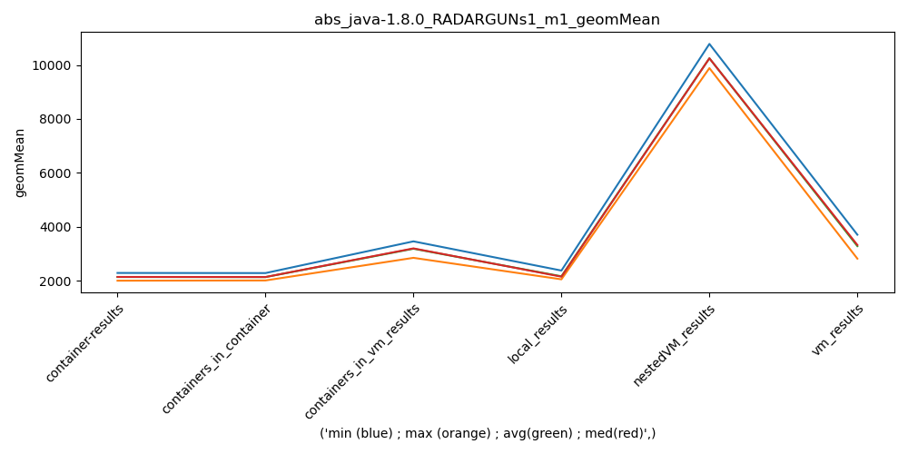
all runs of one jdk were made AVARAGE before processing
BasicOperations.Get.ResponseTimeMean
java-1.8.0 RADARGUNs1 BasicOperations.Get.ResponseTimeMean where all runs of one jdk were made AVARAGE before processing
MIN -1140.0 container-results
MIN -1140.4 containers_in_container
MIN -1669.4 containers_in_vm_results
MIN -1185.4 local_results
MIN -5872.2 nestedVM_results
MIN -1653.0 vm_results
MAX -1076.6 container-results
MAX -1090.4 containers_in_container
MAX -1537.2 containers_in_vm_results
MAX -1114.0 local_results
MAX -5778.2 nestedVM_results
MAX -1512.2 vm_results
AVG -1110.685714285714 container-results
AVG -1117.5714285714287 containers_in_container
AVG -1634.7714285714285 containers_in_vm_results
AVG -1149.2 local_results
AVG -5828.5428571428565 nestedVM_results
AVG -1594.9428571428573 vm_results
MED -1113.8 container-results
MED -1120.0 containers_in_container
MED -1655.0 containers_in_vm_results
MED -1147.2 local_results
MED -5824.0 nestedVM_results
MED -1605.8 vm_results
BasicOperations.Put.ResponseTimeMean
java-1.8.0 RADARGUNs1 BasicOperations.Put.ResponseTimeMean where all runs of one jdk were made AVARAGE before processing
MIN -4147.2 container-results
MIN -4156.0 containers_in_container
MIN -6605.8 containers_in_vm_results
MIN -4082.0 local_results
MIN -18480.4 nestedVM_results
MIN -7370.8 vm_results
MAX -3915.4 container-results
MAX -3982.4 containers_in_container
MAX -6432.4 containers_in_vm_results
MAX -4010.2 local_results
MAX -18025.2 nestedVM_results
MAX -7183.4 vm_results
AVG -4031.4 container-results
AVG -4046.057142857143 containers_in_container
AVG -6535.085714285715 containers_in_vm_results
AVG -4036.0399999999995 local_results
AVG -18244.885714285716 nestedVM_results
AVG -7295.085714285715 vm_results
MED -4021.2 container-results
MED -4029.4 containers_in_container
MED -6535.2 containers_in_vm_results
MED -4018.4 local_results
MED -18268.2 nestedVM_results
MED -7322.6 vm_results
geomMean of all keys (benchmark meassured relativre accuracy)
{'MIN': [2174.352317357976, 2177.039825083593, 3320.801487593018, 2199.7278922630408, 10417.322346937337, 3490.549011258831], 'MAX': [2053.124360578287, 2083.844754294331, 3144.5007998090887, 2113.6136827717596, 10205.54803232046, 3295.8667266744874], 'AVG': [2116.038371242693, 2126.4425365441903, 3268.5427041694884, 2153.6520536056887, 10312.18203434112, 3411.0474714147413], 'MED': [2116.3205239282634, 2124.3653169829336, 3288.7316704164236, 2147.0697426958445, 10314.746569838737, 3429.0860414985214]}
java-1.8.0 RADARGUNs1 geomMean where all runs of one jdk were made AVARAGE before processing
MIN 2174.352317357976 container-results
MIN 2177.039825083593 containers_in_container
MIN 3320.801487593018 containers_in_vm_results
MIN 2199.7278922630408 local_results
MIN 10417.322346937337 nestedVM_results
MIN 3490.549011258831 vm_results
MAX 2053.124360578287 container-results
MAX 2083.844754294331 containers_in_container
MAX 3144.5007998090887 containers_in_vm_results
MAX 2113.6136827717596 local_results
MAX 10205.54803232046 nestedVM_results
MAX 3295.8667266744874 vm_results
AVG 2116.038371242693 container-results
AVG 2126.4425365441903 containers_in_container
AVG 3268.5427041694884 containers_in_vm_results
AVG 2153.6520536056887 local_results
AVG 10312.18203434112 nestedVM_results
AVG 3411.0474714147413 vm_results
MED 2116.3205239282634 container-results
MED 2124.3653169829336 containers_in_container
MED 3288.7316704164236 containers_in_vm_results
MED 2147.0697426958445 local_results
MED 10314.746569838737 nestedVM_results
MED 3429.0860414985214 vm_results
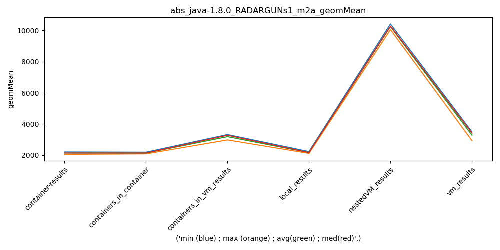
all runs of one jdk were made MEDIAN before processing
BasicOperations.Get.ResponseTimeMean
java-1.8.0 RADARGUNs1 BasicOperations.Get.ResponseTimeMean where all runs of one jdk were made MEDIAN before processing
MIN -1137.0 container-results
MIN -1135.0 containers_in_container
MIN -1738.0 containers_in_vm_results
MIN -1185.0 local_results
MIN -5845.0 nestedVM_results
MIN -1682.0 vm_results
MAX -1064.0 container-results
MAX -1074.0 containers_in_container
MAX -1542.0 containers_in_vm_results
MAX -1121.0 local_results
MAX -5721.0 nestedVM_results
MAX -1510.0 vm_results
AVG -1105.7142857142858 container-results
AVG -1112.4285714285713 containers_in_container
AVG -1645.2857142857142 containers_in_vm_results
AVG -1145.6 local_results
AVG -5799.142857142857 nestedVM_results
AVG -1585.142857142857 vm_results
MED -1111.0 container-results
MED -1123.0 containers_in_container
MED -1647.0 containers_in_vm_results
MED -1149.0 local_results
MED -5811.0 nestedVM_results
MED -1551.0 vm_results

BasicOperations.Put.ResponseTimeMean
java-1.8.0 RADARGUNs1 BasicOperations.Put.ResponseTimeMean where all runs of one jdk were made MEDIAN before processing
MIN -4147.0 container-results
MIN -4108.0 containers_in_container
MIN -6596.0 containers_in_vm_results
MIN -4084.0 local_results
MIN -18323.0 nestedVM_results
MIN -7372.0 vm_results
MAX -3904.0 container-results
MAX -3996.0 containers_in_container
MAX -6384.0 containers_in_vm_results
MAX -3981.0 local_results
MAX -18031.0 nestedVM_results
MAX -7217.0 vm_results
AVG -4031.4285714285716 container-results
AVG -4035.714285714286 containers_in_container
AVG -6507.428571428572 containers_in_vm_results
AVG -4023.2 local_results
AVG -18197.0 nestedVM_results
AVG -7293.285714285715 vm_results
MED -4039.0 container-results
MED -4042.0 containers_in_container
MED -6517.0 containers_in_vm_results
MED -4019.0 local_results
MED -18188.0 nestedVM_results
MED -7327.0 vm_results
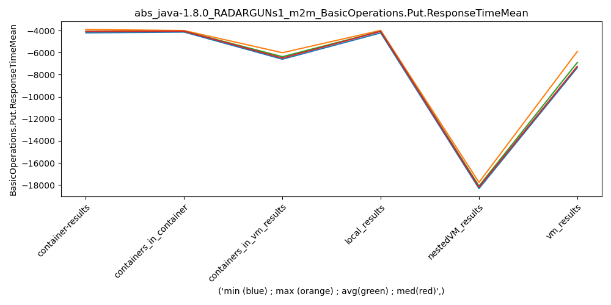
geomMean of all keys (benchmark meassured relativre accuracy)
{'MIN': [2171.4370817502404, 2159.3008127632424, 3385.8304741968404, 2199.895452061302, 10348.813216982902, 3521.3213429052453], 'MAX': [2038.1010769831805, 2071.642826357864, 3137.5353384464056, 2112.510591689424, 10156.542275794454, 3301.161916659042], 'AVG': [2111.304848491877, 2118.830780772976, 3272.0909622603895, 2146.8530271073514, 10272.63367259967, 3400.132314352199], 'MED': [2118.3316548642706, 2130.531858480412, 3276.201916854332, 2148.9139117237805, 10280.586948224309, 3371.0795006941025]}
java-1.8.0 RADARGUNs1 geomMean where all runs of one jdk were made MEDIAN before processing
MIN 2171.4370817502404 container-results
MIN 2159.3008127632424 containers_in_container
MIN 3385.8304741968404 containers_in_vm_results
MIN 2199.895452061302 local_results
MIN 10348.813216982902 nestedVM_results
MIN 3521.3213429052453 vm_results
MAX 2038.1010769831805 container-results
MAX 2071.642826357864 containers_in_container
MAX 3137.5353384464056 containers_in_vm_results
MAX 2112.510591689424 local_results
MAX 10156.542275794454 nestedVM_results
MAX 3301.161916659042 vm_results
AVG 2111.304848491877 container-results
AVG 2118.830780772976 containers_in_container
AVG 3272.0909622603895 containers_in_vm_results
AVG 2146.8530271073514 local_results
AVG 10272.63367259967 nestedVM_results
AVG 3400.132314352199 vm_results
MED 2118.3316548642706 container-results
MED 2130.531858480412 containers_in_container
MED 3276.201916854332 containers_in_vm_results
MED 2148.9139117237805 local_results
MED 10280.586948224309 nestedVM_results
MED 3371.0795006941025 vm_results
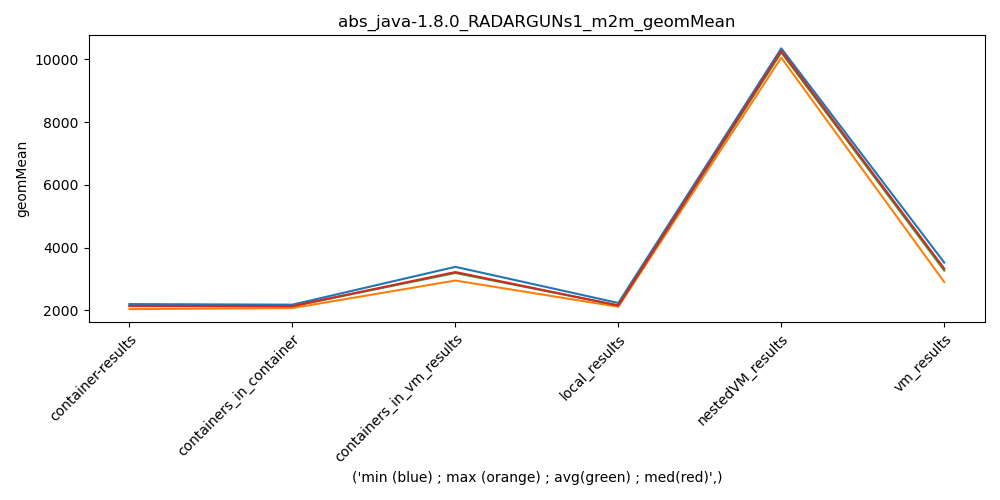
geomMean of all metrics from geomMean of all keys
{'MIN': [2209.6139838261875, 2206.2053522189212, 3388.584290820271, 2224.2258386067588, 10514.258719788586, 3571.682464553169], 'MAX': [2031.0421919061835, 2055.0753199228734, 3122.5635087705755, 2092.724891714236, 10144.878274294799, 3263.6286864484887], 'AVG': [2114.4593523317358, 2123.902251159597, 3269.7250291342802, 2151.3833223190813, 10298.982358612016, 3407.405197937806], 'MED': [2115.9756348314345, 2128.737571628354, 3265.152916864128, 2150.033794650099, 10290.18902107125, 3392.47151920765]}
java-1.8.0 RADARGUNs1 geomMean geomMean
MIN 2209.6139838261875 container-results
MIN 2206.2053522189212 containers_in_container
MIN 3388.584290820271 containers_in_vm_results
MIN 2224.2258386067588 local_results
MIN 10514.258719788586 nestedVM_results
MIN 3571.682464553169 vm_results
MAX 2031.0421919061835 container-results
MAX 2055.0753199228734 containers_in_container
MAX 3122.5635087705755 containers_in_vm_results
MAX 2092.724891714236 local_results
MAX 10144.878274294799 nestedVM_results
MAX 3263.6286864484887 vm_results
AVG 2114.4593523317358 container-results
AVG 2123.902251159597 containers_in_container
AVG 3269.7250291342802 containers_in_vm_results
AVG 2151.3833223190813 local_results
AVG 10298.982358612016 nestedVM_results
AVG 3407.405197937806 vm_results
MED 2115.9756348314345 container-results
MED 2128.737571628354 containers_in_container
MED 3265.152916864128 containers_in_vm_results
MED 2150.033794650099 local_results
MED 10290.18902107125 nestedVM_results
MED 3392.47151920765 vm_results
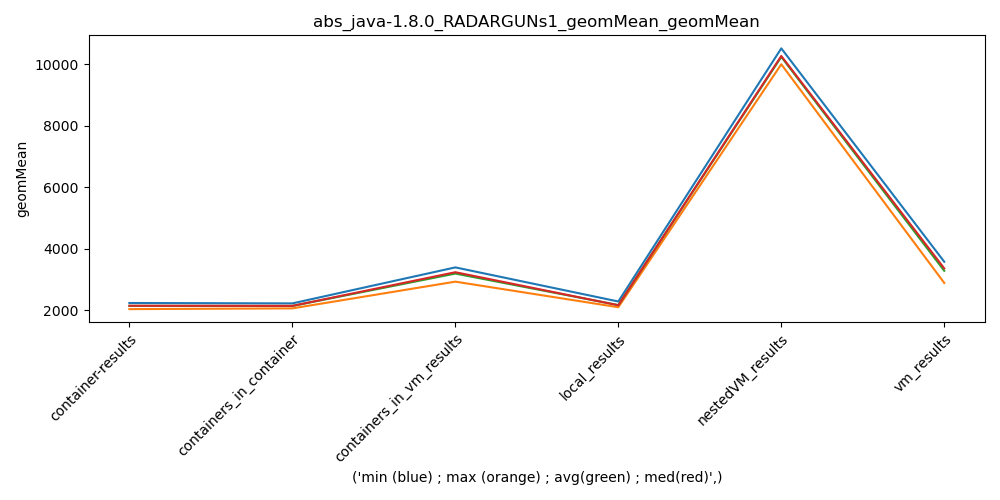
RADARGUNs3
all runs of one jdk are treated as INDIVIDUAL items
BasicOperations.Get.ResponseTimeMean
java-1.8.0 RADARGUNs3 BasicOperations.Get.ResponseTimeMean where all runs of one jdk are treated as INDIVIDUAL items
MIN -62348.0 container-results
MIN -66641.0 containers_in_container
MIN -165278.0 containers_in_vm_results
MIN -61487.0 local_results
MIN -132031.0 vm_results
MAX -60078.0 container-results
MAX -63517.0 containers_in_container
MAX -156556.0 containers_in_vm_results
MAX -58937.0 local_results
MAX -115600.0 vm_results
AVG -61363.514285714286 container-results
AVG -65047.857142857145 containers_in_container
AVG -161667.81818181818 containers_in_vm_results
AVG -60413.24 local_results
AVG -120921.94285714286 vm_results
MED -61602.0 container-results
MED -65133.0 containers_in_container
MED -161137.0 containers_in_vm_results
MED -60481.0 local_results
MED -120002.0 vm_results

BasicOperations.Put.ResponseTimeMean
java-1.8.0 RADARGUNs3 BasicOperations.Put.ResponseTimeMean where all runs of one jdk are treated as INDIVIDUAL items
MIN -252978.0 container-results
MIN -265484.0 containers_in_container
MIN -664337.0 containers_in_vm_results
MIN -247034.0 local_results
MIN -509316.0 vm_results
MAX -244154.0 container-results
MAX -257407.0 containers_in_container
MAX -624696.0 containers_in_vm_results
MAX -240993.0 local_results
MAX -440380.0 vm_results
AVG -248161.08571428573 container-results
AVG -261730.05714285714 containers_in_container
AVG -648833.3636363636 containers_in_vm_results
AVG -244863.76 local_results
AVG -465681.85714285716 vm_results
MED -248707.0 container-results
MED -262129.0 containers_in_container
MED -651258.0 containers_in_vm_results
MED -245414.0 local_results
MED -465380.0 vm_results
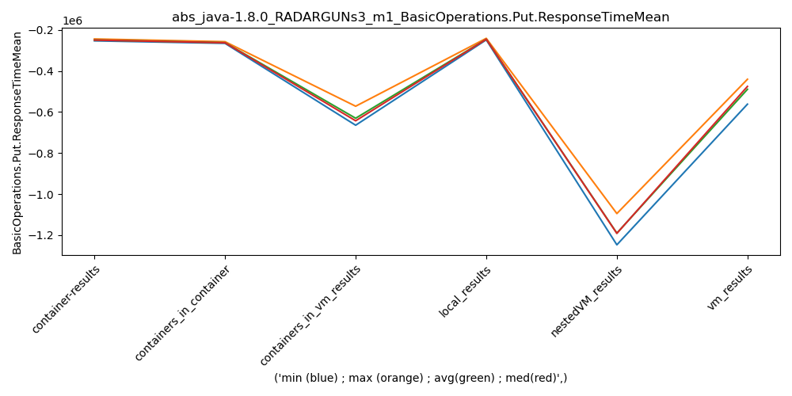
geomMean of all keys (benchmark meassured relativre accuracy)
{'MIN': [125589.30027673536, 133011.72596429233, 331361.2691398921, 123245.2009532217, 259317.3746512177, 1.0], 'MAX': [121112.69137460367, 127866.02527254846, 312729.7666932267, 119178.0367391576, 225627.85289055074, 1.0], 'AVG': [123401.93000268245, 130479.80444122534, 323875.7080465609, 121626.53123468744, 237299.71537917346, 1.0], 'MED': [123777.41560559421, 130664.64004083125, 323947.1567184994, 121831.37581920349, 236318.70590370116, 1.0]}
java-1.8.0 RADARGUNs3 geomMean where all runs of one jdk are treated as INDIVIDUAL items
MIN 125589.30027673536 container-results
MIN 133011.72596429233 containers_in_container
MIN 331361.2691398921 containers_in_vm_results
MIN 123245.2009532217 local_results
MIN 259317.3746512177 nestedVM_results
MIN 1.0 vm_results
MAX 121112.69137460367 container-results
MAX 127866.02527254846 containers_in_container
MAX 312729.7666932267 containers_in_vm_results
MAX 119178.0367391576 local_results
MAX 225627.85289055074 nestedVM_results
MAX 1.0 vm_results
AVG 123401.93000268245 container-results
AVG 130479.80444122534 containers_in_container
AVG 323875.7080465609 containers_in_vm_results
AVG 121626.53123468744 local_results
AVG 237299.71537917346 nestedVM_results
AVG 1.0 vm_results
MED 123777.41560559421 container-results
MED 130664.64004083125 containers_in_container
MED 323947.1567184994 containers_in_vm_results
MED 121831.37581920349 local_results
MED 236318.70590370116 nestedVM_results
MED 1.0 vm_results

all runs of one jdk were made AVARAGE before processing
BasicOperations.Get.ResponseTimeMean
java-1.8.0 RADARGUNs3 BasicOperations.Get.ResponseTimeMean where all runs of one jdk were made AVARAGE before processing
MIN -62042.4 container-results
MIN -65889.2 containers_in_container
MIN -164000.4 containers_in_vm_results
MIN -60784.0 local_results
MIN -124858.2 vm_results
MAX -60484.8 container-results
MAX -64131.2 containers_in_container
MAX -159235.8 containers_in_vm_results
MAX -59568.8 local_results
MAX -118789.2 vm_results
AVG -61363.514285714286 container-results
AVG -65047.85714285715 containers_in_container
AVG -161748.34285714285 containers_in_vm_results
AVG -60413.240000000005 local_results
AVG -120921.94285714286 vm_results
MED -61482.2 container-results
MED -65155.0 containers_in_container
MED -161814.8 containers_in_vm_results
MED -60471.2 local_results
MED -119997.0 vm_results

BasicOperations.Put.ResponseTimeMean
java-1.8.0 RADARGUNs3 BasicOperations.Put.ResponseTimeMean where all runs of one jdk were made AVARAGE before processing
MIN -250990.8 container-results
MIN -264344.8 containers_in_container
MIN -658495.6 containers_in_vm_results
MIN -246110.0 local_results
MIN -481882.8 vm_results
MAX -245363.4 container-results
MAX -258425.2 containers_in_container
MAX -640291.8 containers_in_vm_results
MAX -242063.6 local_results
MAX -456948.8 vm_results
AVG -248161.08571428573 container-results
AVG -261730.05714285717 containers_in_container
AVG -649075.2476190476 containers_in_vm_results
AVG -244863.76 local_results
AVG -465681.8571428571 vm_results
MED -248909.4 container-results
MED -262614.2 containers_in_container
MED -648873.0 containers_in_vm_results
MED -245180.4 local_results
MED -462001.2 vm_results

geomMean of all keys (benchmark meassured relativre accuracy)
{'MIN': [124788.10684484319, 131975.25296872895, 328623.70851513435, 122309.2402069443, 245289.66349799576, 1.0], 'MAX': [121822.64229739888, 128736.62332933857, 319307.65259611304, 120080.9650847294, 232981.93576532922, 1.0], 'AVG': [123401.93000268245, 130479.80444122535, 324016.73674668506, 121626.53123468746, 237299.71537917346, 1.0], 'MED': [123707.30581772444, 130807.59993593645, 324032.7988343155, 121763.51261556149, 235454.36499755108, 1.0]}
java-1.8.0 RADARGUNs3 geomMean where all runs of one jdk were made AVARAGE before processing
MIN 124788.10684484319 container-results
MIN 131975.25296872895 containers_in_container
MIN 328623.70851513435 containers_in_vm_results
MIN 122309.2402069443 local_results
MIN 245289.66349799576 nestedVM_results
MIN 1.0 vm_results
MAX 121822.64229739888 container-results
MAX 128736.62332933857 containers_in_container
MAX 319307.65259611304 containers_in_vm_results
MAX 120080.9650847294 local_results
MAX 232981.93576532922 nestedVM_results
MAX 1.0 vm_results
AVG 123401.93000268245 container-results
AVG 130479.80444122535 containers_in_container
AVG 324016.73674668506 containers_in_vm_results
AVG 121626.53123468746 local_results
AVG 237299.71537917346 nestedVM_results
AVG 1.0 vm_results
MED 123707.30581772444 container-results
MED 130807.59993593645 containers_in_container
MED 324032.7988343155 containers_in_vm_results
MED 121763.51261556149 local_results
MED 235454.36499755108 nestedVM_results
MED 1.0 vm_results
all runs of one jdk were made MEDIAN before processing
BasicOperations.Get.ResponseTimeMean
java-1.8.0 RADARGUNs3 BasicOperations.Get.ResponseTimeMean where all runs of one jdk were made MEDIAN before processing
MIN -62048.0 container-results
MIN -66032.0 containers_in_container
MIN -164728.0 containers_in_vm_results
MIN -60901.0 local_results
MIN -125297.0 vm_results
MAX -60613.0 container-results
MAX -64223.0 containers_in_container
MAX -159482.0 containers_in_vm_results
MAX -59702.0 local_results
MAX -116443.0 vm_results
AVG -61406.42857142857 container-results
AVG -65090.142857142855 containers_in_container
AVG -161791.57142857142 containers_in_vm_results
AVG -60506.4 local_results
AVG -119752.57142857143 vm_results
MED -61512.0 container-results
MED -65218.0 containers_in_container
MED -160810.0 containers_in_vm_results
MED -60615.0 local_results
MED -119490.0 vm_results

BasicOperations.Put.ResponseTimeMean
java-1.8.0 RADARGUNs3 BasicOperations.Put.ResponseTimeMean where all runs of one jdk were made MEDIAN before processing
MIN -250557.0 container-results
MIN -264451.0 containers_in_container
MIN -659325.0 containers_in_vm_results
MIN -245851.0 local_results
MIN -485660.0 vm_results
MAX -244938.0 container-results
MAX -258832.0 containers_in_container
MAX -639384.0 containers_in_vm_results
MAX -241563.0 local_results
MAX -446167.0 vm_results
AVG -247923.0 container-results
AVG -261880.57142857142 containers_in_container
AVG -648197.7142857143 containers_in_vm_results
AVG -244663.0 local_results
AVG -461843.4285714286 vm_results
MED -248729.0 container-results
MED -262551.0 containers_in_container
MED -644985.0 containers_in_vm_results
MED -245414.0 local_results
MED -457797.0 vm_results

geomMean of all keys (benchmark meassured relativre accuracy)
{'MIN': [124685.84817853228, 132144.72532795244, 329559.2338260301, 122362.46054652546, 246681.45657912758, 1.0], 'MAX': [121845.91496640336, 128930.08778403899, 319327.7925392652, 120090.7749412918, 227932.06001131126, 1.0], 'AVG': [123385.84193785884, 130559.73271187376, 323840.8973411077, 121670.36345470494, 235174.27191088808, 1.0], 'MED': [123692.43407743257, 130855.07677579804, 322055.95453274884, 121966.26422908918, 233884.93651793824, 1.0]}
java-1.8.0 RADARGUNs3 geomMean where all runs of one jdk were made MEDIAN before processing
MIN 124685.84817853228 container-results
MIN 132144.72532795244 containers_in_container
MIN 329559.2338260301 containers_in_vm_results
MIN 122362.46054652546 local_results
MIN 246681.45657912758 nestedVM_results
MIN 1.0 vm_results
MAX 121845.91496640336 container-results
MAX 128930.08778403899 containers_in_container
MAX 319327.7925392652 containers_in_vm_results
MAX 120090.7749412918 local_results
MAX 227932.06001131126 nestedVM_results
MAX 1.0 vm_results
AVG 123385.84193785884 container-results
AVG 130559.73271187376 containers_in_container
AVG 323840.8973411077 containers_in_vm_results
AVG 121670.36345470494 local_results
AVG 235174.27191088808 nestedVM_results
AVG 1.0 vm_results
MED 123692.43407743257 container-results
MED 130855.07677579804 containers_in_container
MED 322055.95453274884 containers_in_vm_results
MED 121966.26422908918 local_results
MED 233884.93651793824 nestedVM_results
MED 1.0 vm_results
geomMean of all metrics from geomMean of all keys
{'MIN': [125020.43344496193, 132376.4575093059, 329846.11553441855, 122638.21734178731, 250350.88014550883, 1.0], 'MAX': [121593.27274761074, 128510.07758657589, 317106.4596086126, 119782.4930695676, 228826.74970814865, 1.0], 'AVG': [123396.56708134414, 130506.4417597567, 323911.105123353, 121641.14021988698, 236589.10839566845, 1.0], 'MED': [123725.71295174288, 130775.74719923355, 323344.0144365248, 121853.68842252853, 235217.17652076457, 1.0]}
java-1.8.0 RADARGUNs3 geomMean geomMean
MIN 125020.43344496193 container-results
MIN 132376.4575093059 containers_in_container
MIN 329846.11553441855 containers_in_vm_results
MIN 122638.21734178731 local_results
MIN 250350.88014550883 nestedVM_results
MIN 1.0 vm_results
MAX 121593.27274761074 container-results
MAX 128510.07758657589 containers_in_container
MAX 317106.4596086126 containers_in_vm_results
MAX 119782.4930695676 local_results
MAX 228826.74970814865 nestedVM_results
MAX 1.0 vm_results
AVG 123396.56708134414 container-results
AVG 130506.4417597567 containers_in_container
AVG 323911.105123353 containers_in_vm_results
AVG 121641.14021988698 local_results
AVG 236589.10839566845 nestedVM_results
AVG 1.0 vm_results
MED 123725.71295174288 container-results
MED 130775.74719923355 containers_in_container
MED 323344.0144365248 containers_in_vm_results
MED 121853.68842252853 local_results
MED 235217.17652076457 nestedVM_results
MED 1.0 vm_results
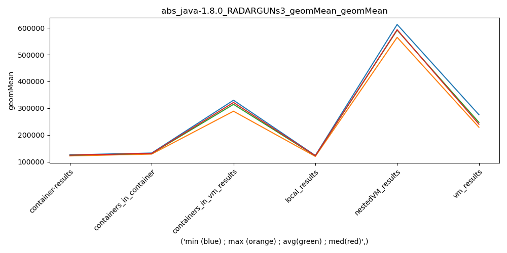
geomMean of all benchamrks from geomMean of all metrics and all keys
{'MIN': [6899.055604878686, 8091.54257927629, 10726.517084745623, 6795.298621803951, 20828.57777387151, 192.63908157332565], 'MAX': [6748.593063294065, 8152.130062621324, 10740.432772703629, 6695.327618108698, 20348.463539155855, 190.54163864139989], 'AVG': [6810.810593964124, 8106.320997025971, 10711.584958957039, 6748.443226863801, 20526.466368785168, 191.16856982283872], 'MED': [6814.370038156897, 8122.535635425113, 10679.109038748355, 6751.616178448252, 20476.413868483865, 190.66065222930916]}
java-1.8.0 geomMean geomMean geomMean
MIN 6899.055604878686 container-results
MIN 8091.54257927629 containers_in_container
MIN 10726.517084745623 containers_in_vm_results
MIN 6795.298621803951 local_results
MIN 20828.57777387151 nestedVM_results
MIN 192.63908157332565 vm_results
MAX 6748.593063294065 container-results
MAX 8152.130062621324 containers_in_container
MAX 10740.432772703629 containers_in_vm_results
MAX 6695.327618108698 local_results
MAX 20348.463539155855 nestedVM_results
MAX 190.54163864139989 vm_results
AVG 6810.810593964124 container-results
AVG 8106.320997025971 containers_in_container
AVG 10711.584958957039 containers_in_vm_results
AVG 6748.443226863801 local_results
AVG 20526.466368785168 nestedVM_results
AVG 191.16856982283872 vm_results
MED 6814.370038156897 container-results
MED 8122.535635425113 containers_in_container
MED 10679.109038748355 containers_in_vm_results
MED 6751.616178448252 local_results
MED 20476.413868483865 nestedVM_results
MED 190.66065222930916 vm_results
java-11
DACAPO
all runs of one jdk are treated as INDIVIDUAL items
geom
java-11 DACAPO geom where all runs of one jdk are treated as INDIVIDUAL items
MIN -1189.0 container-results
MIN -1880.0 containers_in_container
MIN -1094.0 containers_in_vm_results
MIN -1178.0 local_results
MIN -3465.0 nestedVM_results
MIN -2081.0 vm_results
MAX -1322.0 container-results
MAX -2099.0 containers_in_container
MAX -1386.0 containers_in_vm_results
MAX -1332.0 local_results
MAX -3945.0 nestedVM_results
MAX -2270.0 vm_results
AVG -1243.8529411764705 container-results
AVG -1961.1333333333334 containers_in_container
AVG -1194.6363636363637 containers_in_vm_results
AVG -1224.5625 local_results
AVG -3700.076923076923 nestedVM_results
AVG -2158.28 vm_results
MED -1250.0 container-results
MED -1967.0 containers_in_container
MED -1191.0 containers_in_vm_results
MED -1218.0 local_results
MED -3691.0 nestedVM_results
MED -2160.0 vm_results
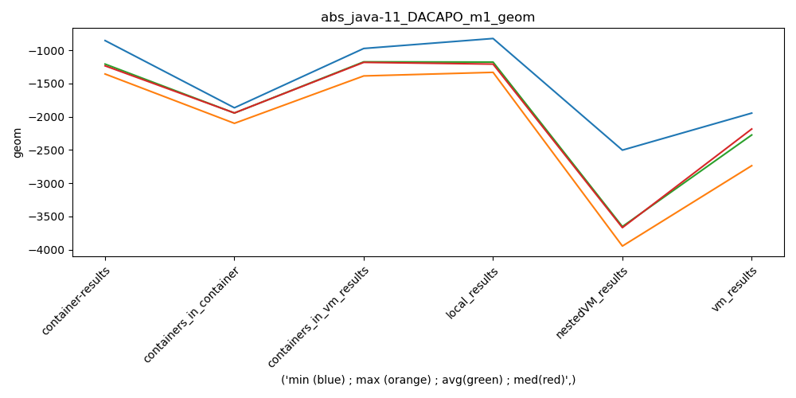
geomMean of all keys (benchmark meassured relativre accuracy)
{'MIN': [1189.0, 1880.0, 1094.0, 1178.0, 3465.0, 2081.0], 'MAX': [1322.0, 2099.0, 1386.0, 1332.0, 3945.0, 2270.0], 'AVG': [1243.8529411764705, 1961.1333333333334, 1194.6363636363637, 1224.5625, 3700.076923076923, 2158.28], 'MED': [1250.0, 1967.0, 1191.0, 1218.0, 3691.0, 2160.0]}
java-11 DACAPO geomMean where all runs of one jdk are treated as INDIVIDUAL items
MIN -1189.0 container-results
MIN -1880.0 containers_in_container
MIN -1094.0 containers_in_vm_results
MIN -1178.0 local_results
MIN -3465.0 nestedVM_results
MIN -2081.0 vm_results
MAX -1322.0 container-results
MAX -2099.0 containers_in_container
MAX -1386.0 containers_in_vm_results
MAX -1332.0 local_results
MAX -3945.0 nestedVM_results
MAX -2270.0 vm_results
AVG -1243.8529411764705 container-results
AVG -1961.1333333333334 containers_in_container
AVG -1194.6363636363637 containers_in_vm_results
AVG -1224.5625 local_results
AVG -3700.076923076923 nestedVM_results
AVG -2158.28 vm_results
MED -1250.0 container-results
MED -1967.0 containers_in_container
MED -1191.0 containers_in_vm_results
MED -1218.0 local_results
MED -3691.0 nestedVM_results
MED -2160.0 vm_results

all runs of one jdk were made AVARAGE before processing
geom
java-11 DACAPO geom where all runs of one jdk were made AVARAGE before processing
MIN -1236.4 container-results
MIN -1909.0 containers_in_container
MIN -1164.5 containers_in_vm_results
MIN -1210.2 local_results
MIN -3630.6666666666665 nestedVM_results
MIN -2144.6 vm_results
MAX -1252.6 container-results
MAX -2024.6666666666667 containers_in_container
MAX -1215.0 containers_in_vm_results
MAX -1240.4 local_results
MAX -3779.6666666666665 nestedVM_results
MAX -2180.8 vm_results
AVG -1243.6642857142856 container-results
AVG -1954.2619047619046 containers_in_container
AVG -1193.297619047619 containers_in_vm_results
AVG -1225.542857142857 local_results
AVG -3703.221428571429 nestedVM_results
AVG -2158.538888888889 vm_results
MED -1240.2 container-results
MED -1952.5 containers_in_container
MED -1195.6666666666667 containers_in_vm_results
MED -1224.8 local_results
MED -3698.5 nestedVM_results
MED -2158.2 vm_results

geomMean of all keys (benchmark meassured relativre accuracy)
{'MIN': [1236.4, 1909.0, 1164.5, 1210.2, 3630.6666666666665, 2144.6], 'MAX': [1252.6, 2024.6666666666667, 1215.0, 1240.4, 3779.6666666666665, 2180.8], 'AVG': [1243.6642857142856, 1954.2619047619046, 1193.297619047619, 1225.542857142857, 3703.221428571429, 2158.538888888889], 'MED': [1240.2, 1952.5, 1195.6666666666667, 1224.8, 3698.5, 2158.2]}
java-11 DACAPO geomMean where all runs of one jdk were made AVARAGE before processing
MIN -1236.4 container-results
MIN -1909.0 containers_in_container
MIN -1164.5 containers_in_vm_results
MIN -1210.2 local_results
MIN -3630.6666666666665 nestedVM_results
MIN -2144.6 vm_results
MAX -1252.6 container-results
MAX -2024.6666666666667 containers_in_container
MAX -1215.0 containers_in_vm_results
MAX -1240.4 local_results
MAX -3779.6666666666665 nestedVM_results
MAX -2180.8 vm_results
AVG -1243.6642857142856 container-results
AVG -1954.2619047619046 containers_in_container
AVG -1193.297619047619 containers_in_vm_results
AVG -1225.542857142857 local_results
AVG -3703.221428571429 nestedVM_results
AVG -2158.538888888889 vm_results
MED -1240.2 container-results
MED -1952.5 containers_in_container
MED -1195.6666666666667 containers_in_vm_results
MED -1224.8 local_results
MED -3698.5 nestedVM_results
MED -2158.2 vm_results
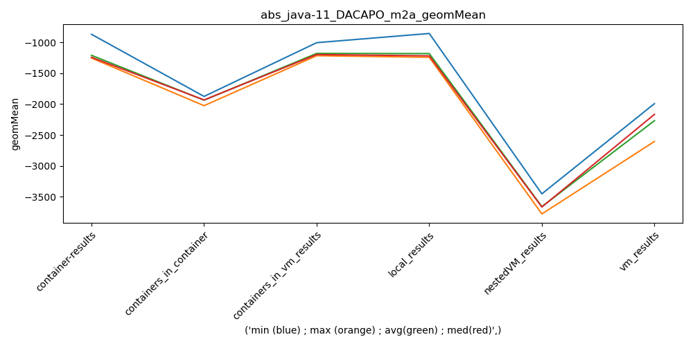
all runs of one jdk were made MEDIAN before processing
geom
java-11 DACAPO geom where all runs of one jdk were made MEDIAN before processing
MIN -1239.0 container-results
MIN -1909.0 containers_in_container
MIN -1177.0 containers_in_vm_results
MIN -1208.0 local_results
MIN -3647.0 nestedVM_results
MIN -2112.0 vm_results
MAX -1261.0 container-results
MAX -2009.0 containers_in_container
MAX -1247.0 containers_in_vm_results
MAX -1259.0 local_results
MAX -3792.0 nestedVM_results
MAX -2193.0 vm_results
AVG -1249.7142857142858 container-results
AVG -1967.142857142857 containers_in_container
AVG -1203.7142857142858 containers_in_vm_results
AVG -1225.5714285714287 local_results
AVG -3690.1428571428573 nestedVM_results
AVG -2158.8333333333335 vm_results
MED -1252.0 container-results
MED -1979.0 containers_in_container
MED -1201.0 containers_in_vm_results
MED -1223.0 local_results
MED -3685.0 nestedVM_results
MED -2160.0 vm_results
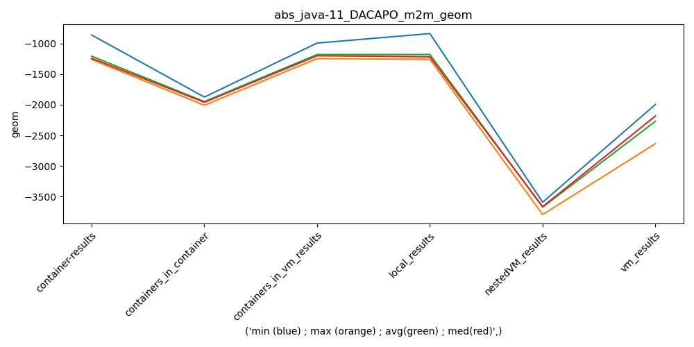
geomMean of all keys (benchmark meassured relativre accuracy)
{'MIN': [1239.0, 1909.0, 1177.0, 1208.0, 3647.0, 2112.0], 'MAX': [1261.0, 2009.0, 1247.0, 1259.0, 3792.0, 2193.0], 'AVG': [1249.7142857142858, 1967.142857142857, 1203.7142857142858, 1225.5714285714287, 3690.1428571428573, 2158.8333333333335], 'MED': [1252.0, 1979.0, 1201.0, 1223.0, 3685.0, 2160.0]}
java-11 DACAPO geomMean where all runs of one jdk were made MEDIAN before processing
MIN -1239.0 container-results
MIN -1909.0 containers_in_container
MIN -1177.0 containers_in_vm_results
MIN -1208.0 local_results
MIN -3647.0 nestedVM_results
MIN -2112.0 vm_results
MAX -1261.0 container-results
MAX -2009.0 containers_in_container
MAX -1247.0 containers_in_vm_results
MAX -1259.0 local_results
MAX -3792.0 nestedVM_results
MAX -2193.0 vm_results
AVG -1249.7142857142858 container-results
AVG -1967.142857142857 containers_in_container
AVG -1203.7142857142858 containers_in_vm_results
AVG -1225.5714285714287 local_results
AVG -3690.1428571428573 nestedVM_results
AVG -2158.8333333333335 vm_results
MED -1252.0 container-results
MED -1979.0 containers_in_container
MED -1201.0 containers_in_vm_results
MED -1223.0 local_results
MED -3685.0 nestedVM_results
MED -2160.0 vm_results

geomMean of all metrics from geomMean of all keys
{'MIN': [1221.24852575141, 1899.2839665701783, 1144.5754484565732, 1198.6428278707215, 3579.9348796452337, 2112.3737659205144], 'MAX': [1278.1632202471899, 2043.8481961237792, 1280.5660602599328, 1276.5286629916654, 3838.1588558758867, 2214.250624246265], 'AVG': [1245.740674835849, 1960.8389688313932, 1197.2071622702952, 1225.2255054491995, 3697.80953295036, 2158.550728904191], 'MED': [1247.3893246285393, 1966.136801388146, 1195.881911501588, 1221.9299443839632, 3691.495869439849, 2159.399833256129]}
java-11 DACAPO geomMean geomMean
MIN -1221.24852575141 container-results
MIN -1899.2839665701783 containers_in_container
MIN -1144.5754484565732 containers_in_vm_results
MIN -1198.6428278707215 local_results
MIN -3579.9348796452337 nestedVM_results
MIN -2112.3737659205144 vm_results
MAX -1278.1632202471899 container-results
MAX -2043.8481961237792 containers_in_container
MAX -1280.5660602599328 containers_in_vm_results
MAX -1276.5286629916654 local_results
MAX -3838.1588558758867 nestedVM_results
MAX -2214.250624246265 vm_results
AVG -1245.740674835849 container-results
AVG -1960.8389688313932 containers_in_container
AVG -1197.2071622702952 containers_in_vm_results
AVG -1225.2255054491995 local_results
AVG -3697.80953295036 nestedVM_results
AVG -2158.550728904191 vm_results
MED -1247.3893246285393 container-results
MED -1966.136801388146 containers_in_container
MED -1195.881911501588 containers_in_vm_results
MED -1221.9299443839632 local_results
MED -3691.495869439849 nestedVM_results
MED -2159.399833256129 vm_results
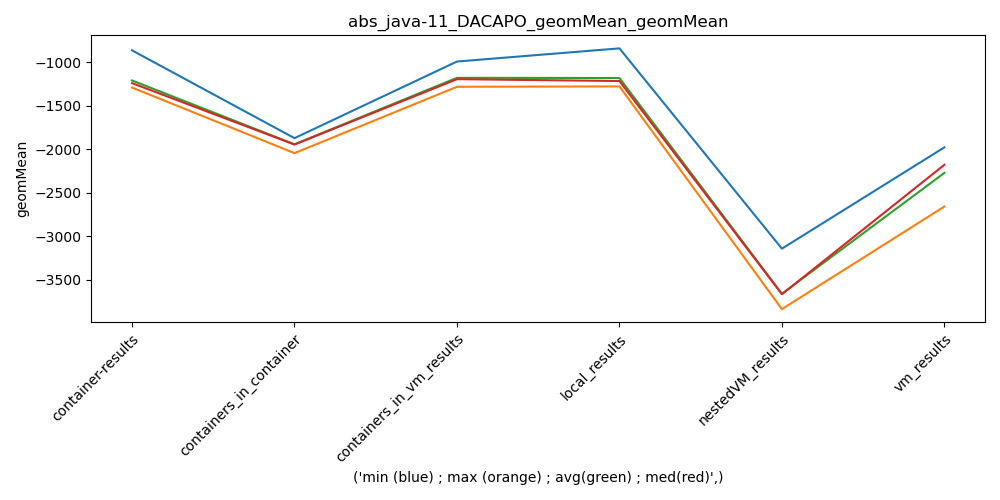
RADARGUNs1
all runs of one jdk are treated as INDIVIDUAL items
BasicOperations.Get.ResponseTimeMean
java-11 RADARGUNs1 BasicOperations.Get.ResponseTimeMean where all runs of one jdk are treated as INDIVIDUAL items
MIN -1179.0 container-results
MIN -1194.0 containers_in_container
MIN -1733.0 containers_in_vm_results
MIN -1176.0 local_results
MIN -6014.0 nestedVM_results
MIN -1560.0 vm_results
MAX -1080.0 container-results
MAX -1068.0 containers_in_container
MAX -1547.0 containers_in_vm_results
MAX -1083.0 local_results
MAX -5654.0 nestedVM_results
MAX -1397.0 vm_results
AVG -1130.0857142857142 container-results
AVG -1123.9375 containers_in_container
AVG -1627.6857142857143 containers_in_vm_results
AVG -1117.7714285714285 local_results
AVG -5846.228571428572 nestedVM_results
AVG -1480.0285714285715 vm_results
MED -1129.0 container-results
MED -1131.0 containers_in_container
MED -1620.0 containers_in_vm_results
MED -1115.0 local_results
MED -5828.0 nestedVM_results
MED -1480.0 vm_results

BasicOperations.Put.ResponseTimeMean
java-11 RADARGUNs1 BasicOperations.Put.ResponseTimeMean where all runs of one jdk are treated as INDIVIDUAL items
MIN -4294.0 container-results
MIN -4244.0 containers_in_container
MIN -7065.0 containers_in_vm_results
MIN -4212.0 local_results
MIN -20742.0 nestedVM_results
MIN -7477.0 vm_results
MAX -3795.0 container-results
MAX -3868.0 containers_in_container
MAX -6128.0 containers_in_vm_results
MAX -3783.0 local_results
MAX -17629.0 nestedVM_results
MAX -6556.0 vm_results
AVG -4009.7428571428572 container-results
AVG -4024.46875 containers_in_container
AVG -6502.4857142857145 containers_in_vm_results
AVG -3972.4285714285716 local_results
AVG -18205.14285714286 nestedVM_results
AVG -6849.571428571428 vm_results
MED -4003.0 container-results
MED -4022.0 containers_in_container
MED -6502.0 containers_in_vm_results
MED -3970.0 local_results
MED -18110.0 nestedVM_results
MED -6861.0 vm_results
geomMean of all keys (benchmark meassured relativre accuracy)
{'MIN': [2250.02799982578, 2251.0744101428545, 3499.0920250830786, 2225.603738314617, 11168.81318672669, 3415.277441145887], 'MAX': [2024.4999382563587, 2032.4920664051804, 3078.963461946244, 2024.1020231203763, 9983.70502368735, 3026.339703338011], 'AVG': [2128.697517454353, 2126.7936772764597, 3253.306487942659, 2107.194143685786, 10316.560779560568, 3183.953739664967], 'MED': [2125.884992185607, 2132.810821427911, 3245.4953396977785, 2103.936786122625, 10273.513517779591, 3186.5781019771034]}
java-11 RADARGUNs1 geomMean where all runs of one jdk are treated as INDIVIDUAL items
MIN 2250.02799982578 container-results
MIN 2251.0744101428545 containers_in_container
MIN 3499.0920250830786 containers_in_vm_results
MIN 2225.603738314617 local_results
MIN 11168.81318672669 nestedVM_results
MIN 3415.277441145887 vm_results
MAX 2024.4999382563587 container-results
MAX 2032.4920664051804 containers_in_container
MAX 3078.963461946244 containers_in_vm_results
MAX 2024.1020231203763 local_results
MAX 9983.70502368735 nestedVM_results
MAX 3026.339703338011 vm_results
AVG 2128.697517454353 container-results
AVG 2126.7936772764597 containers_in_container
AVG 3253.306487942659 containers_in_vm_results
AVG 2107.194143685786 local_results
AVG 10316.560779560568 nestedVM_results
AVG 3183.953739664967 vm_results
MED 2125.884992185607 container-results
MED 2132.810821427911 containers_in_container
MED 3245.4953396977785 containers_in_vm_results
MED 2103.936786122625 local_results
MED 10273.513517779591 nestedVM_results
MED 3186.5781019771034 vm_results
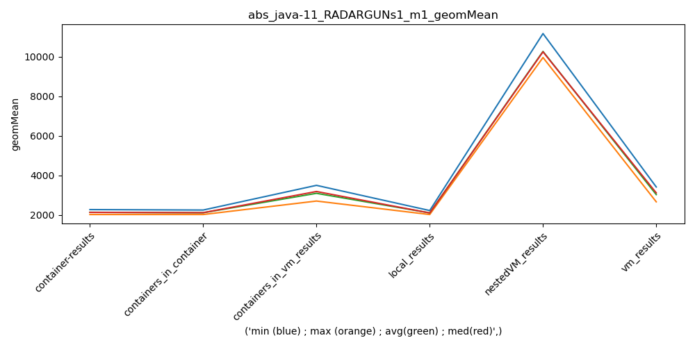
all runs of one jdk were made AVARAGE before processing
BasicOperations.Get.ResponseTimeMean
java-11 RADARGUNs1 BasicOperations.Get.ResponseTimeMean where all runs of one jdk were made AVARAGE before processing
MIN -1143.0 container-results
MIN -1137.0 containers_in_container
MIN -1662.6 containers_in_vm_results
MIN -1130.6 local_results
MIN -5899.2 nestedVM_results
MIN -1505.8 vm_results
MAX -1108.2 container-results
MAX -1115.0 containers_in_container
MAX -1577.2 containers_in_vm_results
MAX -1095.6 local_results
MAX -5773.2 nestedVM_results
MAX -1447.8 vm_results
AVG -1130.0857142857144 container-results
AVG -1123.7714285714287 containers_in_container
AVG -1627.6857142857145 containers_in_vm_results
AVG -1117.7714285714287 local_results
AVG -5846.228571428571 nestedVM_results
AVG -1480.0285714285715 vm_results
MED -1136.0 container-results
MED -1122.0 containers_in_container
MED -1620.4 containers_in_vm_results
MED -1123.4 local_results
MED -5848.8 nestedVM_results
MED -1478.8 vm_results
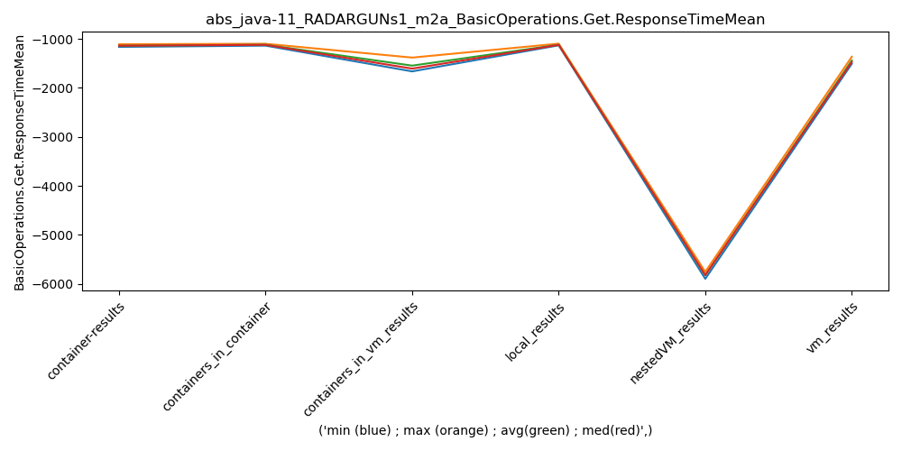
BasicOperations.Put.ResponseTimeMean
java-11 RADARGUNs1 BasicOperations.Put.ResponseTimeMean where all runs of one jdk were made AVARAGE before processing
MIN -4157.0 container-results
MIN -4110.4 containers_in_container
MIN -6658.6 containers_in_vm_results
MIN -4031.8 local_results
MIN -18882.0 nestedVM_results
MIN -6945.6 vm_results
MAX -3942.8 container-results
MAX -3928.5 containers_in_container
MAX -6329.2 containers_in_vm_results
MAX -3867.2 local_results
MAX -17996.6 nestedVM_results
MAX -6751.0 vm_results
AVG -4009.7428571428572 container-results
AVG -4016.242857142857 containers_in_container
AVG -6502.4857142857145 containers_in_vm_results
AVG -3972.4285714285716 local_results
AVG -18205.14285714286 nestedVM_results
AVG -6849.571428571428 vm_results
MED -3975.0 container-results
MED -4016.8 containers_in_container
MED -6474.0 containers_in_vm_results
MED -4010.8 local_results
MED -18083.8 nestedVM_results
MED -6866.6 vm_results

geomMean of all keys (benchmark meassured relativre accuracy)
{'MIN': [2179.7823285823747, 2161.8336661269755, 3327.2493684724022, 2135.0299951054553, 10554.084252079854, 3233.988942467182], 'MAX': [2090.313603266266, 2092.911249910039, 3159.4958838396988, 2058.3741933866154, 10193.035422287121, 3126.3553540824496], 'AVG': [2128.697517454353, 2124.462043214993, 3253.306487942659, 2107.1941436857865, 10316.560779560568, 3183.953739664967], 'MED': [2124.994117638917, 2122.9341958713653, 3238.899442711984, 2122.6711285547744, 10284.382793342535, 3186.5856461108965]}
java-11 RADARGUNs1 geomMean where all runs of one jdk were made AVARAGE before processing
MIN 2179.7823285823747 container-results
MIN 2161.8336661269755 containers_in_container
MIN 3327.2493684724022 containers_in_vm_results
MIN 2135.0299951054553 local_results
MIN 10554.084252079854 nestedVM_results
MIN 3233.988942467182 vm_results
MAX 2090.313603266266 container-results
MAX 2092.911249910039 containers_in_container
MAX 3159.4958838396988 containers_in_vm_results
MAX 2058.3741933866154 local_results
MAX 10193.035422287121 nestedVM_results
MAX 3126.3553540824496 vm_results
AVG 2128.697517454353 container-results
AVG 2124.462043214993 containers_in_container
AVG 3253.306487942659 containers_in_vm_results
AVG 2107.1941436857865 local_results
AVG 10316.560779560568 nestedVM_results
AVG 3183.953739664967 vm_results
MED 2124.994117638917 container-results
MED 2122.9341958713653 containers_in_container
MED 3238.899442711984 containers_in_vm_results
MED 2122.6711285547744 local_results
MED 10284.382793342535 nestedVM_results
MED 3186.5856461108965 vm_results
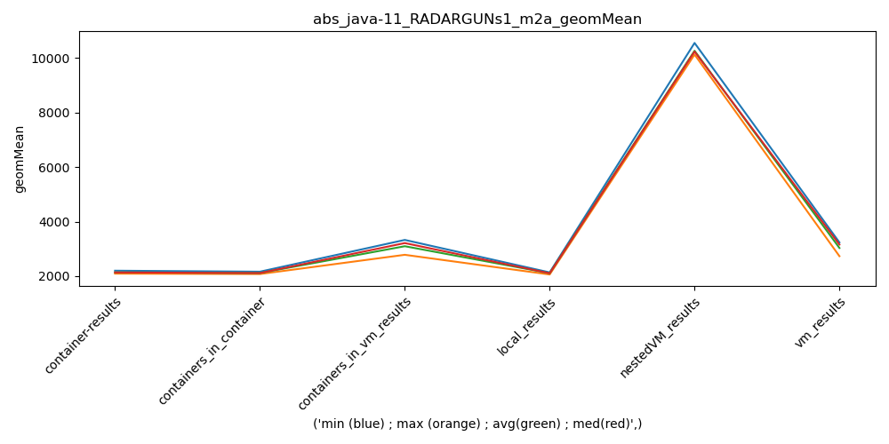
all runs of one jdk were made MEDIAN before processing
BasicOperations.Get.ResponseTimeMean
java-11 RADARGUNs1 BasicOperations.Get.ResponseTimeMean where all runs of one jdk were made MEDIAN before processing
MIN -1146.0 container-results
MIN -1141.0 containers_in_container
MIN -1655.0 containers_in_vm_results
MIN -1134.0 local_results
MIN -5927.0 nestedVM_results
MIN -1503.0 vm_results
MAX -1114.0 container-results
MAX -1120.0 containers_in_container
MAX -1578.0 containers_in_vm_results
MAX -1098.0 local_results
MAX -5781.0 nestedVM_results
MAX -1447.0 vm_results
AVG -1132.142857142857 container-results
AVG -1129.4285714285713 containers_in_container
AVG -1625.857142857143 containers_in_vm_results
AVG -1116.7142857142858 local_results
AVG -5848.0 nestedVM_results
AVG -1475.0 vm_results
MED -1135.0 container-results
MED -1129.0 containers_in_container
MED -1628.0 containers_in_vm_results
MED -1125.0 local_results
MED -5828.0 nestedVM_results
MED -1467.0 vm_results

BasicOperations.Put.ResponseTimeMean
java-11 RADARGUNs1 BasicOperations.Put.ResponseTimeMean where all runs of one jdk were made MEDIAN before processing
MIN -4159.0 container-results
MIN -4100.0 containers_in_container
MIN -6675.0 containers_in_vm_results
MIN -4025.0 local_results
MIN -18593.0 nestedVM_results
MIN -7026.0 vm_results
MAX -3943.0 container-results
MAX -3947.0 containers_in_container
MAX -6207.0 containers_in_vm_results
MAX -3829.0 local_results
MAX -17839.0 nestedVM_results
MAX -6720.0 vm_results
AVG -4010.4285714285716 container-results
AVG -4020.8571428571427 containers_in_container
AVG -6476.857142857143 containers_in_vm_results
AVG -3950.1428571428573 local_results
AVG -18126.14285714286 nestedVM_results
AVG -6840.714285714285 vm_results
MED -3977.0 container-results
MED -4028.0 containers_in_container
MED -6489.0 containers_in_vm_results
MED -3973.0 local_results
MED -18118.0 nestedVM_results
MED -6801.0 vm_results

geomMean of all keys (benchmark meassured relativre accuracy)
{'MIN': [2183.1660495711267, 2162.8915830434034, 3323.7215587350274, 2136.4339446844597, 10497.65264237677, 3249.627363252593], 'MAX': [2095.829668651534, 2102.531807131583, 3129.639915389628, 2050.4248340283043, 10155.159230657095, 3118.307233099394], 'AVG': [2130.8162898815303, 2131.0257949577967, 3245.064629399481, 2100.2811619361046, 10295.711895180995, 3176.484467367749], 'MED': [2124.5929021814977, 2132.5130714722477, 3250.244913848801, 2114.1487648696816, 10275.782403301464, 3158.649553210992]}
java-11 RADARGUNs1 geomMean where all runs of one jdk were made MEDIAN before processing
MIN 2183.1660495711267 container-results
MIN 2162.8915830434034 containers_in_container
MIN 3323.7215587350274 containers_in_vm_results
MIN 2136.4339446844597 local_results
MIN 10497.65264237677 nestedVM_results
MIN 3249.627363252593 vm_results
MAX 2095.829668651534 container-results
MAX 2102.531807131583 containers_in_container
MAX 3129.639915389628 containers_in_vm_results
MAX 2050.4248340283043 local_results
MAX 10155.159230657095 nestedVM_results
MAX 3118.307233099394 vm_results
AVG 2130.8162898815303 container-results
AVG 2131.0257949577967 containers_in_container
AVG 3245.064629399481 containers_in_vm_results
AVG 2100.2811619361046 local_results
AVG 10295.711895180995 nestedVM_results
AVG 3176.484467367749 vm_results
MED 2124.5929021814977 container-results
MED 2132.5130714722477 containers_in_container
MED 3250.244913848801 containers_in_vm_results
MED 2114.1487648696816 local_results
MED 10275.782403301464 nestedVM_results
MED 3158.649553210992 vm_results
geomMean of all metrics from geomMean of all keys
{'MIN': [2204.0897404067828, 2191.5377661504676, 3382.3752150938335, 2165.278502879422, 10735.936331717887, 3298.623087916408], 'MAX': [2069.9589498854457, 2075.7453896614697, 3122.522432465545, 2044.2477425585978, 10110.221503978444, 3089.998765452301], 'AVG': [2129.403540738051, 2127.4254375576934, 3250.5568785184373, 2104.887291930445, 10309.606464636747, 3181.462032774699], 'MED': [2125.1572687407142, 2129.414416781319, 3244.876563228957, 2113.571680474881, 10277.891838761936, 3177.24376231329]}
java-11 RADARGUNs1 geomMean geomMean
MIN 2204.0897404067828 container-results
MIN 2191.5377661504676 containers_in_container
MIN 3382.3752150938335 containers_in_vm_results
MIN 2165.278502879422 local_results
MIN 10735.936331717887 nestedVM_results
MIN 3298.623087916408 vm_results
MAX 2069.9589498854457 container-results
MAX 2075.7453896614697 containers_in_container
MAX 3122.522432465545 containers_in_vm_results
MAX 2044.2477425585978 local_results
MAX 10110.221503978444 nestedVM_results
MAX 3089.998765452301 vm_results
AVG 2129.403540738051 container-results
AVG 2127.4254375576934 containers_in_container
AVG 3250.5568785184373 containers_in_vm_results
AVG 2104.887291930445 local_results
AVG 10309.606464636747 nestedVM_results
AVG 3181.462032774699 vm_results
MED 2125.1572687407142 container-results
MED 2129.414416781319 containers_in_container
MED 3244.876563228957 containers_in_vm_results
MED 2113.571680474881 local_results
MED 10277.891838761936 nestedVM_results
MED 3177.24376231329 vm_results
RADARGUNs3
all runs of one jdk are treated as INDIVIDUAL items
BasicOperations.Get.ResponseTimeMean
java-11 RADARGUNs3 BasicOperations.Get.ResponseTimeMean where all runs of one jdk are treated as INDIVIDUAL items
MIN -65879.0 container-results
MIN -69588.0 containers_in_container
MIN -169475.0 containers_in_vm_results
MIN -64919.0 local_results
MIN -134533.0 vm_results
MAX -63070.0 container-results
MAX -66575.0 containers_in_container
MAX -151597.0 containers_in_vm_results
MAX -62633.0 local_results
MAX -121129.0 vm_results
AVG -64488.08571428571 container-results
AVG -67910.6 containers_in_container
AVG -161220.22857142857 containers_in_vm_results
AVG -63670.91428571429 local_results
AVG -126061.62857142858 vm_results
MED -64480.0 container-results
MED -67738.0 containers_in_container
MED -162339.0 containers_in_vm_results
MED -63584.0 local_results
MED -125151.0 vm_results
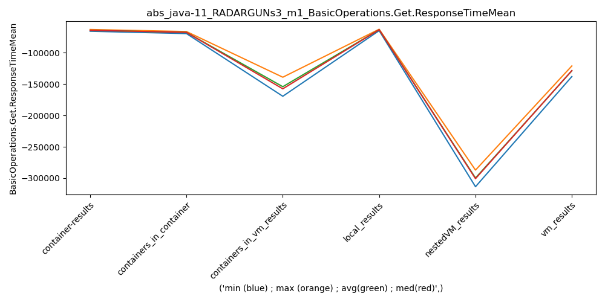
BasicOperations.Put.ResponseTimeMean
java-11 RADARGUNs3 BasicOperations.Put.ResponseTimeMean where all runs of one jdk are treated as INDIVIDUAL items
MIN -265946.0 container-results
MIN -278152.0 containers_in_container
MIN -675993.0 containers_in_vm_results
MIN -262271.0 local_results
MIN -519494.0 vm_results
MAX -257205.0 container-results
MAX -268984.0 containers_in_container
MAX -610465.0 containers_in_vm_results
MAX -254120.0 local_results
MAX -463829.0 vm_results
AVG -260821.54285714286 container-results
AVG -273771.4285714286 containers_in_container
AVG -649256.4857142858 containers_in_vm_results
AVG -258074.7142857143 local_results
AVG -486980.6 vm_results
MED -260282.0 container-results
MED -273220.0 containers_in_container
MED -657105.0 containers_in_vm_results
MED -257664.0 local_results
MED -485403.0 vm_results
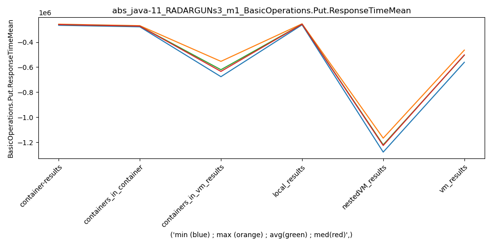
geomMean of all keys (benchmark meassured relativre accuracy)
{'MIN': [132364.1059124414, 139125.9910153383, 338472.91424130235, 130485.13727241122, 264365.4408238717, 1.0], 'MAX': [127365.29884548616, 133819.3177385089, 304211.542524277, 126159.81119199569, 237029.83555029522, 1.0], 'AVG': [129691.48781590746, 136352.4183032441, 323532.50072958606, 128186.7895400923, 247769.18193893976, 1.0], 'MED': [129549.15422340664, 136041.8184236009, 326609.5047530001, 127997.29597143839, 246472.4545522278, 1.0]}
java-11 RADARGUNs3 geomMean where all runs of one jdk are treated as INDIVIDUAL items
MIN 132364.1059124414 container-results
MIN 139125.9910153383 containers_in_container
MIN 338472.91424130235 containers_in_vm_results
MIN 130485.13727241122 local_results
MIN 264365.4408238717 nestedVM_results
MIN 1.0 vm_results
MAX 127365.29884548616 container-results
MAX 133819.3177385089 containers_in_container
MAX 304211.542524277 containers_in_vm_results
MAX 126159.81119199569 local_results
MAX 237029.83555029522 nestedVM_results
MAX 1.0 vm_results
AVG 129691.48781590746 container-results
AVG 136352.4183032441 containers_in_container
AVG 323532.50072958606 containers_in_vm_results
AVG 128186.7895400923 local_results
AVG 247769.18193893976 nestedVM_results
AVG 1.0 vm_results
MED 129549.15422340664 container-results
MED 136041.8184236009 containers_in_container
MED 326609.5047530001 containers_in_vm_results
MED 127997.29597143839 local_results
MED 246472.4545522278 nestedVM_results
MED 1.0 vm_results
all runs of one jdk were made AVARAGE before processing
BasicOperations.Get.ResponseTimeMean
java-11 RADARGUNs3 BasicOperations.Get.ResponseTimeMean where all runs of one jdk were made AVARAGE before processing
MIN -65356.2 container-results
MIN -68676.2 containers_in_container
MIN -165422.6 containers_in_vm_results
MIN -64557.4 local_results
MIN -130387.8 vm_results
MAX -63673.6 container-results
MAX -67335.6 containers_in_container
MAX -156860.2 containers_in_vm_results
MAX -63151.4 local_results
MAX -123572.8 vm_results
AVG -64488.08571428571 container-results
AVG -67910.59999999999 containers_in_container
AVG -161220.2285714286 containers_in_vm_results
AVG -63670.91428571429 local_results
AVG -126061.62857142859 vm_results
MED -64286.2 container-results
MED -67818.0 containers_in_container
MED -160620.4 containers_in_vm_results
MED -63607.8 local_results
MED -126142.0 vm_results

BasicOperations.Put.ResponseTimeMean
java-11 RADARGUNs3 BasicOperations.Put.ResponseTimeMean where all runs of one jdk were made AVARAGE before processing
MIN -263597.4 container-results
MIN -276342.2 containers_in_container
MIN -665989.4 containers_in_vm_results
MIN -261464.2 local_results
MIN -502570.0 vm_results
MAX -259027.8 container-results
MAX -272138.6 containers_in_container
MAX -632674.4 containers_in_vm_results
MAX -256592.2 local_results
MAX -476014.0 vm_results
AVG -260821.5428571429 container-results
AVG -273771.4285714286 containers_in_container
AVG -649256.4857142858 containers_in_vm_results
AVG -258074.71428571426 local_results
AVG -486980.60000000003 vm_results
MED -260447.0 container-results
MED -273084.2 containers_in_container
MED -644639.8 containers_in_vm_results
MED -257406.0 local_results
MED -487380.6 vm_results

geomMean of all keys (benchmark meassured relativre accuracy)
{'MIN': [131254.4261877671, 137761.1418203261, 331918.20998619526, 129920.93343676376, 255986.32120877085, 1.0], 'MAX': [128425.98072851147, 135368.44504595597, 315026.0829183514, 127295.54846529395, 242533.2612636873, 1.0], 'AVG': [129691.48781590747, 136352.4183032441, 323532.50072958606, 128186.7895400923, 247769.1819389398, 1.0], 'MED': [129395.3164971592, 136088.29588028503, 321779.8976504281, 127957.13878795509, 247949.9216479005, 1.0]}
java-11 RADARGUNs3 geomMean where all runs of one jdk were made AVARAGE before processing
MIN 131254.4261877671 container-results
MIN 137761.1418203261 containers_in_container
MIN 331918.20998619526 containers_in_vm_results
MIN 129920.93343676376 local_results
MIN 255986.32120877085 nestedVM_results
MIN 1.0 vm_results
MAX 128425.98072851147 container-results
MAX 135368.44504595597 containers_in_container
MAX 315026.0829183514 containers_in_vm_results
MAX 127295.54846529395 local_results
MAX 242533.2612636873 nestedVM_results
MAX 1.0 vm_results
AVG 129691.48781590747 container-results
AVG 136352.4183032441 containers_in_container
AVG 323532.50072958606 containers_in_vm_results
AVG 128186.7895400923 local_results
AVG 247769.1819389398 nestedVM_results
AVG 1.0 vm_results
MED 129395.3164971592 container-results
MED 136088.29588028503 containers_in_container
MED 321779.8976504281 containers_in_vm_results
MED 127957.13878795509 local_results
MED 247949.9216479005 nestedVM_results
MED 1.0 vm_results
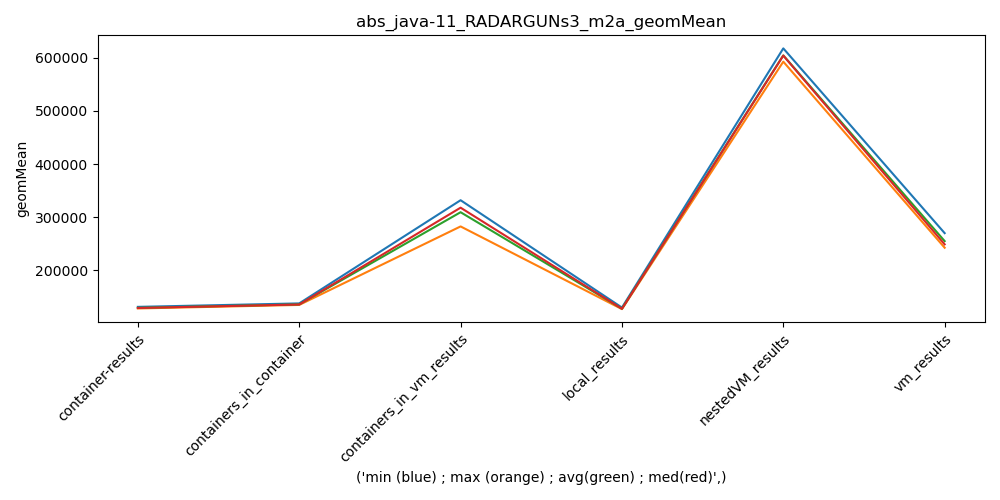
all runs of one jdk were made MEDIAN before processing
BasicOperations.Get.ResponseTimeMean
java-11 RADARGUNs3 BasicOperations.Get.ResponseTimeMean where all runs of one jdk were made MEDIAN before processing
MIN -65364.0 container-results
MIN -68670.0 containers_in_container
MIN -165606.0 containers_in_vm_results
MIN -64628.0 local_results
MIN -130740.0 vm_results
MAX -63635.0 container-results
MAX -67316.0 containers_in_container
MAX -157640.0 containers_in_vm_results
MAX -63244.0 local_results
MAX -122880.0 vm_results
AVG -64502.57142857143 container-results
AVG -67901.14285714286 containers_in_container
AVG -161131.57142857142 containers_in_vm_results
AVG -63632.57142857143 local_results
AVG -125810.28571428571 vm_results
MED -64453.0 container-results
MED -67717.0 containers_in_container
MED -159253.0 containers_in_vm_results
MED -63451.0 local_results
MED -125376.0 vm_results
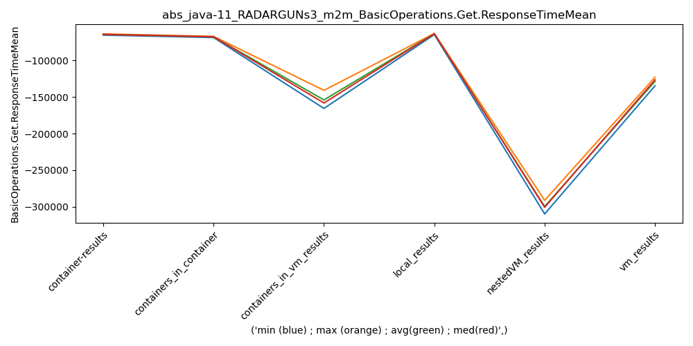
BasicOperations.Put.ResponseTimeMean
java-11 RADARGUNs3 BasicOperations.Put.ResponseTimeMean where all runs of one jdk were made MEDIAN before processing
MIN -263698.0 container-results
MIN -276552.0 containers_in_container
MIN -670610.0 containers_in_vm_results
MIN -261298.0 local_results
MIN -505390.0 vm_results
MAX -258743.0 container-results
MAX -271479.0 containers_in_container
MAX -633992.0 containers_in_vm_results
MAX -256678.0 local_results
MAX -478465.0 vm_results
AVG -260702.85714285713 container-results
AVG -273582.14285714284 containers_in_container
AVG -648700.7142857143 containers_in_vm_results
AVG -258170.14285714287 local_results
AVG -486692.5714285714 vm_results
MED -259772.0 container-results
MED -272940.0 containers_in_container
MED -640370.0 containers_in_vm_results
MED -257664.0 local_results
MED -485815.0 vm_results
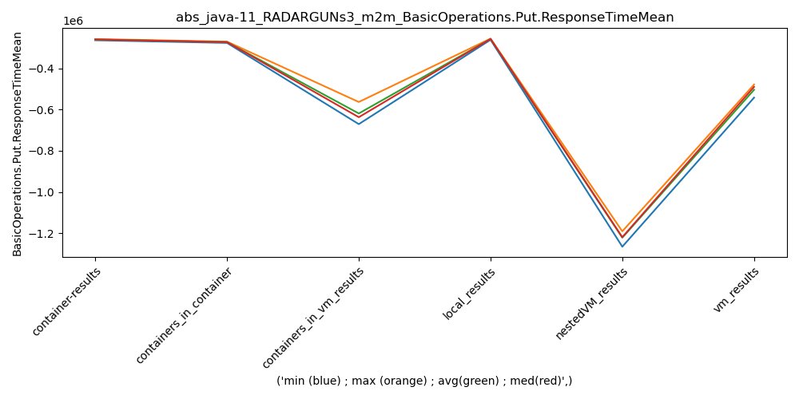
geomMean of all keys (benchmark meassured relativre accuracy)
{'MIN': [131287.30354455454, 137807.20532686234, 333252.21628670377, 129950.63348825969, 257049.97296245725, 1.0], 'MAX': [128316.44791296242, 135184.61585550333, 316136.8356898639, 127410.13865466123, 242474.2856469527, 1.0], 'AVG': [129676.53860467512, 136295.7819057733, 323305.0656573353, 128171.87700927857, 247448.84616107825, 1.0], 'MED': [129395.07222456348, 135951.0131628301, 319344.3965533136, 127863.35856687013, 246798.58476093414, 1.0]}
java-11 RADARGUNs3 geomMean where all runs of one jdk were made MEDIAN before processing
MIN 131287.30354455454 container-results
MIN 137807.20532686234 containers_in_container
MIN 333252.21628670377 containers_in_vm_results
MIN 129950.63348825969 local_results
MIN 257049.97296245725 nestedVM_results
MIN 1.0 vm_results
MAX 128316.44791296242 container-results
MAX 135184.61585550333 containers_in_container
MAX 316136.8356898639 containers_in_vm_results
MAX 127410.13865466123 local_results
MAX 242474.2856469527 nestedVM_results
MAX 1.0 vm_results
AVG 129676.53860467512 container-results
AVG 136295.7819057733 containers_in_container
AVG 323305.0656573353 containers_in_vm_results
AVG 128171.87700927857 local_results
AVG 247448.84616107825 nestedVM_results
AVG 1.0 vm_results
MED 129395.07222456348 container-results
MED 135951.0131628301 containers_in_container
MED 319344.3965533136 containers_in_vm_results
MED 127863.35856687013 local_results
MED 246798.58476093414 nestedVM_results
MED 1.0 vm_results
geomMean of all metrics from geomMean of all keys
{'MIN': [131634.2708865022, 138230.00064363953, 334535.86323206365, 130118.64336976229, 259107.31124822205, 1.0], 'MAX': [128035.02174583502, 134789.017485938, 311744.71606919443, 126953.90923049492, 240665.22250603043, 1.0], 'AVG': [129686.50455402235, 136333.53688960228, 323456.6712673347, 128181.81850371519, 247662.35729594165, 1.0], 'MED': [129446.49397423283, 136027.0305405737, 322563.8367124411, 127939.2521314492, 247072.84162875378, 1.0]}
java-11 RADARGUNs3 geomMean geomMean
MIN 131634.2708865022 container-results
MIN 138230.00064363953 containers_in_container
MIN 334535.86323206365 containers_in_vm_results
MIN 130118.64336976229 local_results
MIN 259107.31124822205 nestedVM_results
MIN 1.0 vm_results
MAX 128035.02174583502 container-results
MAX 134789.017485938 containers_in_container
MAX 311744.71606919443 containers_in_vm_results
MAX 126953.90923049492 local_results
MAX 240665.22250603043 nestedVM_results
MAX 1.0 vm_results
AVG 129686.50455402235 container-results
AVG 136333.53688960228 containers_in_container
AVG 323456.6712673347 containers_in_vm_results
AVG 128181.81850371519 local_results
AVG 247662.35729594165 nestedVM_results
AVG 1.0 vm_results
MED 129446.49397423283 container-results
MED 136027.0305405737 containers_in_container
MED 322563.8367124411 containers_in_vm_results
MED 127939.2521314492 local_results
MED 247072.84162875378 nestedVM_results
MED 1.0 vm_results
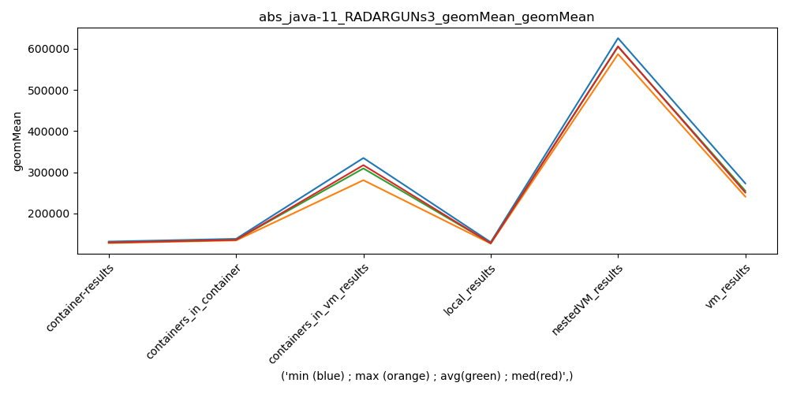
geomMean of all benchamrks from geomMean of all metrics and all keys
{'MIN': [7076.210862992945, 8317.262155024231, 10900.245944897253, 6963.822517170459, 21514.515675710252, 191.00049226022207], 'MAX': [6970.954952738946, 8300.273607778809, 10762.228744575343, 6919.425834129128, 21058.736849343746, 189.84319190743545], 'AVG': [7006.91421558782, 8285.136340931838, 10797.28080742747, 6914.44141398523, 21135.646791754432, 190.07704345359272], 'MED': [7001.016964056521, 8288.953690254324, 10777.070352180031, 6913.357766419208, 21085.171931026205, 190.01790828942524]}
java-11 geomMean geomMean geomMean
MIN 7076.210862992945 container-results
MIN 8317.262155024231 containers_in_container
MIN 10900.245944897253 containers_in_vm_results
MIN 6963.822517170459 local_results
MIN 21514.515675710252 nestedVM_results
MIN 191.00049226022207 vm_results
MAX 6970.954952738946 container-results
MAX 8300.273607778809 containers_in_container
MAX 10762.228744575343 containers_in_vm_results
MAX 6919.425834129128 local_results
MAX 21058.736849343746 nestedVM_results
MAX 189.84319190743545 vm_results
AVG 7006.91421558782 container-results
AVG 8285.136340931838 containers_in_container
AVG 10797.28080742747 containers_in_vm_results
AVG 6914.44141398523 local_results
AVG 21135.646791754432 nestedVM_results
AVG 190.07704345359272 vm_results
MED 7001.016964056521 container-results
MED 8288.953690254324 containers_in_container
MED 10777.070352180031 containers_in_vm_results
MED 6913.357766419208 local_results
MED 21085.171931026205 nestedVM_results
MED 190.01790828942524 vm_results
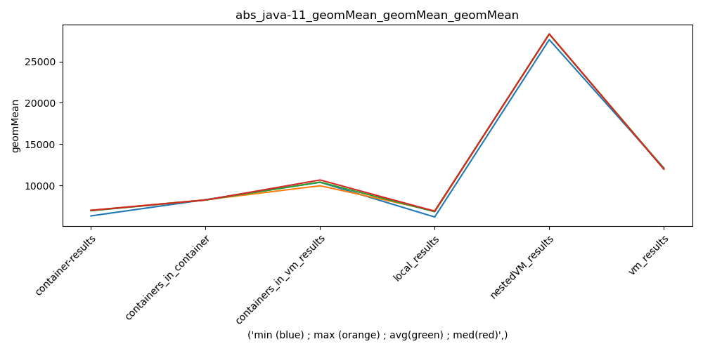
java-17
DACAPO
all runs of one jdk are treated as INDIVIDUAL items
geom
java-17 DACAPO geom where all runs of one jdk are treated as INDIVIDUAL items
MIN -1202.0 container-results
MIN -1881.0 containers_in_container
MIN -1009.0 containers_in_vm_results
MIN -1177.0 local_results
MIN -3436.0 nestedVM_results
MIN -2096.0 vm_results
MAX -1338.0 container-results
MAX -2142.0 containers_in_container
MAX -1244.0 containers_in_vm_results
MAX -1284.0 local_results
MAX -3828.0 nestedVM_results
MAX -2197.0 vm_results
AVG -1270.72 container-results
AVG -2017.2222222222222 containers_in_container
AVG -1063.1764705882354 containers_in_vm_results
AVG -1231.6 local_results
AVG -3653.2727272727275 nestedVM_results
AVG -2146.44 vm_results
MED -1273.0 container-results
MED -2033.0 containers_in_container
MED -1049.0 containers_in_vm_results
MED -1236.0 local_results
MED -3666.0 nestedVM_results
MED -2145.0 vm_results

geomMean of all keys (benchmark meassured relativre accuracy)
{'MIN': [1202.0, 1881.0, 1009.0, 1177.0, 3436.0, 2096.0], 'MAX': [1338.0, 2142.0, 1244.0, 1284.0, 3828.0, 2197.0], 'AVG': [1270.72, 2017.2222222222222, 1063.1764705882354, 1231.6, 3653.2727272727275, 2146.44], 'MED': [1273.0, 2033.0, 1049.0, 1236.0, 3666.0, 2145.0]}
java-17 DACAPO geomMean where all runs of one jdk are treated as INDIVIDUAL items
MIN -1202.0 container-results
MIN -1881.0 containers_in_container
MIN -1009.0 containers_in_vm_results
MIN -1177.0 local_results
MIN -3436.0 nestedVM_results
MIN -2096.0 vm_results
MAX -1338.0 container-results
MAX -2142.0 containers_in_container
MAX -1244.0 containers_in_vm_results
MAX -1284.0 local_results
MAX -3828.0 nestedVM_results
MAX -2197.0 vm_results
AVG -1270.72 container-results
AVG -2017.2222222222222 containers_in_container
AVG -1063.1764705882354 containers_in_vm_results
AVG -1231.6 local_results
AVG -3653.2727272727275 nestedVM_results
AVG -2146.44 vm_results
MED -1273.0 container-results
MED -2033.0 containers_in_container
MED -1049.0 containers_in_vm_results
MED -1236.0 local_results
MED -3666.0 nestedVM_results
MED -2145.0 vm_results

all runs of one jdk were made AVARAGE before processing
geom
java-17 DACAPO geom where all runs of one jdk were made AVARAGE before processing
MIN -1251.6 container-results
MIN -1918.5 containers_in_container
MIN -1026.25 containers_in_vm_results
MIN -1222.4 local_results
MIN -3589.25 nestedVM_results
MIN -2131.4 vm_results
MAX -1293.2 container-results
MAX -2095.5 containers_in_container
MAX -1131.0 containers_in_vm_results
MAX -1237.2 local_results
MAX -3701.6 nestedVM_results
MAX -2159.2 vm_results
AVG -1270.7199999999998 container-results
AVG -2011.6 containers_in_container
AVG -1070.2 containers_in_vm_results
AVG -1231.6000000000001 local_results
AVG -3651.7799999999997 nestedVM_results
AVG -2146.44 vm_results
MED -1275.8 container-results
MED -2016.0 containers_in_container
MED -1068.0 containers_in_vm_results
MED -1235.6 local_results
MED -3648.0 nestedVM_results
MED -2146.6 vm_results
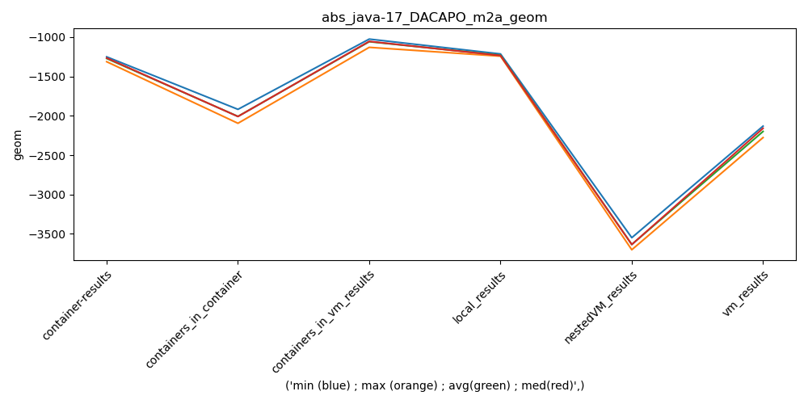
geomMean of all keys (benchmark meassured relativre accuracy)
{'MIN': [1251.6, 1918.5, 1026.25, 1222.4, 3589.25, 2131.4], 'MAX': [1293.2, 2095.5, 1131.0, 1237.2, 3701.6, 2159.2], 'AVG': [1270.7199999999998, 2011.6, 1070.2, 1231.6000000000001, 3651.7799999999997, 2146.44], 'MED': [1275.8, 2016.0, 1068.0, 1235.6, 3648.0, 2146.6]}
java-17 DACAPO geomMean where all runs of one jdk were made AVARAGE before processing
MIN -1251.6 container-results
MIN -1918.5 containers_in_container
MIN -1026.25 containers_in_vm_results
MIN -1222.4 local_results
MIN -3589.25 nestedVM_results
MIN -2131.4 vm_results
MAX -1293.2 container-results
MAX -2095.5 containers_in_container
MAX -1131.0 containers_in_vm_results
MAX -1237.2 local_results
MAX -3701.6 nestedVM_results
MAX -2159.2 vm_results
AVG -1270.7199999999998 container-results
AVG -2011.6 containers_in_container
AVG -1070.2 containers_in_vm_results
AVG -1231.6000000000001 local_results
AVG -3651.7799999999997 nestedVM_results
AVG -2146.44 vm_results
MED -1275.8 container-results
MED -2016.0 containers_in_container
MED -1068.0 containers_in_vm_results
MED -1235.6 local_results
MED -3648.0 nestedVM_results
MED -2146.6 vm_results
all runs of one jdk were made MEDIAN before processing
geom
java-17 DACAPO geom where all runs of one jdk were made MEDIAN before processing
MIN -1251.0 container-results
MIN -1956.0 containers_in_container
MIN -1024.0 containers_in_vm_results
MIN -1215.0 local_results
MIN -3648.0 nestedVM_results
MIN -2129.0 vm_results
MAX -1292.0 container-results
MAX -2142.0 containers_in_container
MAX -1244.0 containers_in_vm_results
MAX -1253.0 local_results
MAX -3742.0 nestedVM_results
MAX -2167.0 vm_results
AVG -1275.6 container-results
AVG -2039.6 containers_in_container
AVG -1088.8 containers_in_vm_results
AVG -1234.5 local_results
AVG -3687.8 nestedVM_results
AVG -2145.2 vm_results
MED -1281.0 container-results
MED -2038.0 containers_in_container
MED -1067.0 containers_in_vm_results
MED -1236.0 local_results
MED -3688.0 nestedVM_results
MED -2145.0 vm_results
geomMean of all keys (benchmark meassured relativre accuracy)
{'MIN': [1251.0, 1956.0, 1024.0, 1215.0, 3648.0, 2129.0], 'MAX': [1292.0, 2142.0, 1244.0, 1253.0, 3742.0, 2167.0], 'AVG': [1275.6, 2039.6, 1088.8, 1234.5, 3687.8, 2145.2], 'MED': [1281.0, 2038.0, 1067.0, 1236.0, 3688.0, 2145.0]}
java-17 DACAPO geomMean where all runs of one jdk were made MEDIAN before processing
MIN -1251.0 container-results
MIN -1956.0 containers_in_container
MIN -1024.0 containers_in_vm_results
MIN -1215.0 local_results
MIN -3648.0 nestedVM_results
MIN -2129.0 vm_results
MAX -1292.0 container-results
MAX -2142.0 containers_in_container
MAX -1244.0 containers_in_vm_results
MAX -1253.0 local_results
MAX -3742.0 nestedVM_results
MAX -2167.0 vm_results
AVG -1275.6 container-results
AVG -2039.6 containers_in_container
AVG -1088.8 containers_in_vm_results
AVG -1234.5 local_results
AVG -3687.8 nestedVM_results
AVG -2145.2 vm_results
MED -1281.0 container-results
MED -2038.0 containers_in_container
MED -1067.0 containers_in_vm_results
MED -1236.0 local_results
MED -3688.0 nestedVM_results
MED -2145.0 vm_results

geomMean of all metrics from geomMean of all keys
{'MIN': [1234.6459722064353, 1918.255637367442, 1019.7211592015811, 1204.6346767645184, 3556.618075134656, 2118.7382174768454], 'MAX': [1307.559441636855, 2126.386465864002, 1205.1315469640856, 1257.9170452569012, 3756.831640426914, 2174.3391215909005], 'AVG': [1272.3445887789653, 2022.7713387274543, 1074.004592581929, 1232.5659089336593, 3664.2465433086804, 2146.0265870467847], 'MED': [1276.5956994806209, 2028.97811202682, 1061.297285521718, 1235.8666522807644, 3667.2968679583114, 2145.5332007801253]}
java-17 DACAPO geomMean geomMean
MIN -1234.6459722064353 container-results
MIN -1918.255637367442 containers_in_container
MIN -1019.7211592015811 containers_in_vm_results
MIN -1204.6346767645184 local_results
MIN -3556.618075134656 nestedVM_results
MIN -2118.7382174768454 vm_results
MAX -1307.559441636855 container-results
MAX -2126.386465864002 containers_in_container
MAX -1205.1315469640856 containers_in_vm_results
MAX -1257.9170452569012 local_results
MAX -3756.831640426914 nestedVM_results
MAX -2174.3391215909005 vm_results
AVG -1272.3445887789653 container-results
AVG -2022.7713387274543 containers_in_container
AVG -1074.004592581929 containers_in_vm_results
AVG -1232.5659089336593 local_results
AVG -3664.2465433086804 nestedVM_results
AVG -2146.0265870467847 vm_results
MED -1276.5956994806209 container-results
MED -2028.97811202682 containers_in_container
MED -1061.297285521718 containers_in_vm_results
MED -1235.8666522807644 local_results
MED -3667.2968679583114 nestedVM_results
MED -2145.5332007801253 vm_results
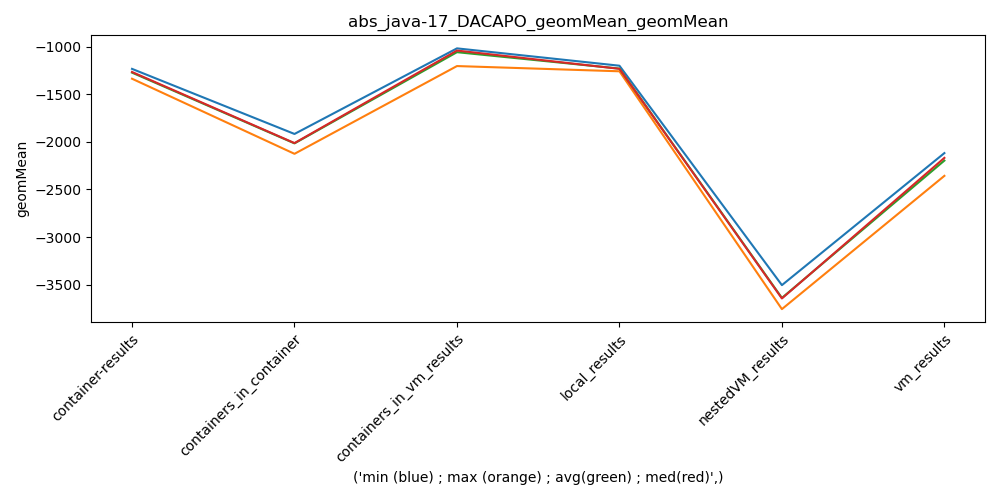
RADARGUNs1
all runs of one jdk are treated as INDIVIDUAL items
BasicOperations.Get.ResponseTimeMean
java-17 RADARGUNs1 BasicOperations.Get.ResponseTimeMean where all runs of one jdk are treated as INDIVIDUAL items
MIN -1160.0 container-results
MIN -1169.0 containers_in_container
MIN -1670.0 containers_in_vm_results
MIN -1178.0 local_results
MIN -5921.0 nestedVM_results
MIN -1544.0 vm_results
MAX -1044.0 container-results
MAX -1049.0 containers_in_container
MAX -1486.0 containers_in_vm_results
MAX -1070.0 local_results
MAX -5720.0 nestedVM_results
MAX -1415.0 vm_results
AVG -1091.36 container-results
AVG -1092.16 containers_in_container
AVG -1570.84 containers_in_vm_results
AVG -1110.84 local_results
AVG -5808.92 nestedVM_results
AVG -1462.08 vm_results
MED -1091.0 container-results
MED -1082.0 containers_in_container
MED -1557.0 containers_in_vm_results
MED -1109.0 local_results
MED -5795.0 nestedVM_results
MED -1450.0 vm_results
BasicOperations.Put.ResponseTimeMean
java-17 RADARGUNs1 BasicOperations.Put.ResponseTimeMean where all runs of one jdk are treated as INDIVIDUAL items
MIN -4050.0 container-results
MIN -3987.0 containers_in_container
MIN -6738.0 containers_in_vm_results
MIN -4279.0 local_results
MIN -18964.0 nestedVM_results
MIN -7146.0 vm_results
MAX -3666.0 container-results
MAX -3708.0 containers_in_container
MAX -5813.0 containers_in_vm_results
MAX -3619.0 local_results
MAX -17179.0 nestedVM_results
MAX -6545.0 vm_results
AVG -3799.28 container-results
AVG -3802.96 containers_in_container
AVG -6234.76 containers_in_vm_results
AVG -3782.52 local_results
AVG -17769.6 nestedVM_results
AVG -6741.2 vm_results
MED -3786.0 container-results
MED -3799.0 containers_in_container
MED -6201.0 containers_in_vm_results
MED -3761.0 local_results
MED -17754.0 nestedVM_results
MED -6717.0 vm_results
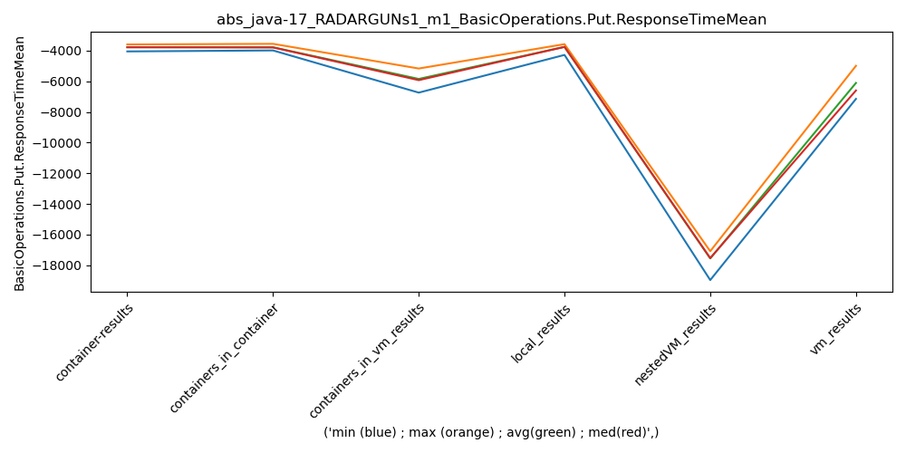
geomMean of all keys (benchmark meassured relativre accuracy)
{'MIN': [2167.4870241826134, 2158.8892977640144, 3354.468661353091, 2245.141866341635, 10596.501498136071, 3321.6598260508254], 'MAX': [1956.3496619980795, 1972.230209686486, 2939.067539203548, 1967.8236709624164, 9912.813929455147, 3043.2178692955918], 'AVG': [2036.2667361620381, 2037.9992133462663, 3129.506414500536, 2049.8230452407347, 10159.831929318516, 3139.4543627834437], 'MED': [2032.3695530094915, 2027.4412445247335, 3107.2426683476137, 2042.2901360972196, 10143.196241816482, 3120.841232744787]}
java-17 RADARGUNs1 geomMean where all runs of one jdk are treated as INDIVIDUAL items
MIN 2167.4870241826134 container-results
MIN 2158.8892977640144 containers_in_container
MIN 3354.468661353091 containers_in_vm_results
MIN 2245.141866341635 local_results
MIN 10596.501498136071 nestedVM_results
MIN 3321.6598260508254 vm_results
MAX 1956.3496619980795 container-results
MAX 1972.230209686486 containers_in_container
MAX 2939.067539203548 containers_in_vm_results
MAX 1967.8236709624164 local_results
MAX 9912.813929455147 nestedVM_results
MAX 3043.2178692955918 vm_results
AVG 2036.2667361620381 container-results
AVG 2037.9992133462663 containers_in_container
AVG 3129.506414500536 containers_in_vm_results
AVG 2049.8230452407347 local_results
AVG 10159.831929318516 nestedVM_results
AVG 3139.4543627834437 vm_results
MED 2032.3695530094915 container-results
MED 2027.4412445247335 containers_in_container
MED 3107.2426683476137 containers_in_vm_results
MED 2042.2901360972196 local_results
MED 10143.196241816482 nestedVM_results
MED 3120.841232744787 vm_results
all runs of one jdk were made AVARAGE before processing
BasicOperations.Get.ResponseTimeMean
java-17 RADARGUNs1 BasicOperations.Get.ResponseTimeMean where all runs of one jdk were made AVARAGE before processing
MIN -1107.8 container-results
MIN -1106.0 containers_in_container
MIN -1609.6 containers_in_vm_results
MIN -1130.0 local_results
MIN -5843.6 nestedVM_results
MIN -1480.8 vm_results
MAX -1070.8 container-results
MAX -1080.0 containers_in_container
MAX -1531.2 containers_in_vm_results
MAX -1096.0 local_results
MAX -5778.8 nestedVM_results
MAX -1450.4 vm_results
AVG -1091.3600000000001 container-results
AVG -1092.16 containers_in_container
AVG -1570.8400000000001 containers_in_vm_results
AVG -1110.84 local_results
AVG -5808.92 nestedVM_results
AVG -1462.0800000000002 vm_results
MED -1099.8 container-results
MED -1093.8 containers_in_container
MED -1576.4 containers_in_vm_results
MED -1111.6 local_results
MED -5811.2 nestedVM_results
MED -1455.2 vm_results

BasicOperations.Put.ResponseTimeMean
java-17 RADARGUNs1 BasicOperations.Put.ResponseTimeMean where all runs of one jdk were made AVARAGE before processing
MIN -3872.4 container-results
MIN -3825.2 containers_in_container
MIN -6521.2 containers_in_vm_results
MIN -3877.4 local_results
MIN -18065.6 nestedVM_results
MIN -6817.2 vm_results
MAX -3766.4 container-results
MAX -3772.2 containers_in_container
MAX -6070.0 containers_in_vm_results
MAX -3720.2 local_results
MAX -17622.0 nestedVM_results
MAX -6681.0 vm_results
AVG -3799.28 container-results
AVG -3802.96 containers_in_container
AVG -6234.76 containers_in_vm_results
AVG -3782.5199999999995 local_results
AVG -17769.6 nestedVM_results
AVG -6741.2 vm_results
MED -3778.6 container-results
MED -3809.4 containers_in_container
MED -6204.8 containers_in_vm_results
MED -3759.4 local_results
MED -17737.2 nestedVM_results
MED -6702.2 vm_results

geomMean of all keys (benchmark meassured relativre accuracy)
{'MIN': [2071.1940324363622, 2056.8595479516825, 3239.8338722841945, 2093.194209814273, 10274.635767753522, 3177.2487721297493], 'MAX': [2008.248271504298, 2018.4092746516997, 3048.6692178719554, 2019.2422341066463, 10091.284041191191, 3112.8961434651173], 'AVG': [2036.2667361620383, 2037.9992133462663, 3129.5064145005363, 2049.8230452407347, 10159.831929318516, 3139.454362783444], 'MED': [2038.5544584337206, 2041.2549375323015, 3127.4984764184937, 2044.247793199249, 10152.557147832264, 3122.9859813966505]}
java-17 RADARGUNs1 geomMean where all runs of one jdk were made AVARAGE before processing
MIN 2071.1940324363622 container-results
MIN 2056.8595479516825 containers_in_container
MIN 3239.8338722841945 containers_in_vm_results
MIN 2093.194209814273 local_results
MIN 10274.635767753522 nestedVM_results
MIN 3177.2487721297493 vm_results
MAX 2008.248271504298 container-results
MAX 2018.4092746516997 containers_in_container
MAX 3048.6692178719554 containers_in_vm_results
MAX 2019.2422341066463 local_results
MAX 10091.284041191191 nestedVM_results
MAX 3112.8961434651173 vm_results
AVG 2036.2667361620383 container-results
AVG 2037.9992133462663 containers_in_container
AVG 3129.5064145005363 containers_in_vm_results
AVG 2049.8230452407347 local_results
AVG 10159.831929318516 nestedVM_results
AVG 3139.454362783444 vm_results
MED 2038.5544584337206 container-results
MED 2041.2549375323015 containers_in_container
MED 3127.4984764184937 containers_in_vm_results
MED 2044.247793199249 local_results
MED 10152.557147832264 nestedVM_results
MED 3122.9859813966505 vm_results
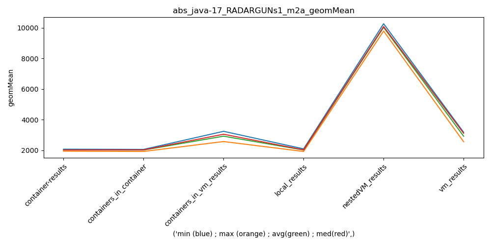
all runs of one jdk were made MEDIAN before processing
BasicOperations.Get.ResponseTimeMean
java-17 RADARGUNs1 BasicOperations.Get.ResponseTimeMean where all runs of one jdk were made MEDIAN before processing
MIN -1104.0 container-results
MIN -1095.0 containers_in_container
MIN -1597.0 containers_in_vm_results
MIN -1136.0 local_results
MIN -5878.0 nestedVM_results
MIN -1468.0 vm_results
MAX -1075.0 container-results
MAX -1081.0 containers_in_container
MAX -1526.0 containers_in_vm_results
MAX -1086.0 local_results
MAX -5759.0 nestedVM_results
MAX -1437.0 vm_results
AVG -1088.8 container-results
AVG -1086.4 containers_in_container
AVG -1562.8 containers_in_vm_results
AVG -1111.6 local_results
AVG -5808.8 nestedVM_results
AVG -1451.2 vm_results
MED -1084.0 container-results
MED -1082.0 containers_in_container
MED -1578.0 containers_in_vm_results
MED -1116.0 local_results
MED -5793.0 nestedVM_results
MED -1450.0 vm_results

BasicOperations.Put.ResponseTimeMean
java-17 RADARGUNs1 BasicOperations.Put.ResponseTimeMean where all runs of one jdk were made MEDIAN before processing
MIN -3875.0 container-results
MIN -3811.0 containers_in_container
MIN -6506.0 containers_in_vm_results
MIN -3792.0 local_results
MIN -17965.0 nestedVM_results
MIN -6777.0 vm_results
MAX -3773.0 container-results
MAX -3742.0 containers_in_container
MAX -6025.0 containers_in_vm_results
MAX -3745.0 local_results
MAX -17580.0 nestedVM_results
MAX -6708.0 vm_results
AVG -3802.4 container-results
AVG -3792.0 containers_in_container
AVG -6196.8 containers_in_vm_results
AVG -3765.4 local_results
AVG -17720.4 nestedVM_results
AVG -6734.4 vm_results
MED -3786.0 container-results
MED -3803.0 containers_in_container
MED -6186.0 containers_in_vm_results
MED -3761.0 local_results
MED -17664.0 nestedVM_results
MED -6737.0 vm_results

geomMean of all keys (benchmark meassured relativre accuracy)
{'MIN': [2068.332661831747, 2042.8032210665813, 3223.3650119091385, 2075.5028306412883, 10276.101887389012, 3154.1458431721258], 'MAX': [2013.9451333142122, 2011.2438937135396, 3032.1856803302794, 2016.6977959029955, 10061.968992200284, 3104.7376700777795], 'AVG': [2034.7120484235602, 2029.6868724017506, 3111.9702826344596, 2045.8784519125275, 10145.65224714508, 3126.173584431933], 'MED': [2025.8390854162135, 2028.5083189378347, 3124.3412105594357, 2048.725457449094, 10115.708180844285, 3125.4839625248437]}
java-17 RADARGUNs1 geomMean where all runs of one jdk were made MEDIAN before processing
MIN 2068.332661831747 container-results
MIN 2042.8032210665813 containers_in_container
MIN 3223.3650119091385 containers_in_vm_results
MIN 2075.5028306412883 local_results
MIN 10276.101887389012 nestedVM_results
MIN 3154.1458431721258 vm_results
MAX 2013.9451333142122 container-results
MAX 2011.2438937135396 containers_in_container
MAX 3032.1856803302794 containers_in_vm_results
MAX 2016.6977959029955 local_results
MAX 10061.968992200284 nestedVM_results
MAX 3104.7376700777795 vm_results
AVG 2034.7120484235602 container-results
AVG 2029.6868724017506 containers_in_container
AVG 3111.9702826344596 containers_in_vm_results
AVG 2045.8784519125275 local_results
AVG 10145.65224714508 nestedVM_results
AVG 3126.173584431933 vm_results
MED 2025.8390854162135 container-results
MED 2028.5083189378347 containers_in_container
MED 3124.3412105594357 containers_in_vm_results
MED 2048.725457449094 local_results
MED 10115.708180844285 nestedVM_results
MED 3125.4839625248437 vm_results
geomMean of all metrics from geomMean of all keys
{'MIN': [2101.8379415741583, 2085.5495606588984, 3272.040390504795, 2136.6114318466102, 10381.316861685847, 3216.8394170808206], 'MAX': [1992.6782112230167, 2000.524431091017, 3006.2508842435323, 2001.1138990720624, 10021.716656526058, 3086.7931603321585], 'AVG': [2035.7483749707258, 2035.224657432785, 3123.650084940784, 2048.5073364718533, 10155.103167995187, 3135.0211795717323], 'MED': [2032.2477338135595, 2032.3918256793877, 3119.68141246583, 2045.0860224921125, 10137.141787639908, 3123.1031493198216]}
java-17 RADARGUNs1 geomMean geomMean
MIN 2101.8379415741583 container-results
MIN 2085.5495606588984 containers_in_container
MIN 3272.040390504795 containers_in_vm_results
MIN 2136.6114318466102 local_results
MIN 10381.316861685847 nestedVM_results
MIN 3216.8394170808206 vm_results
MAX 1992.6782112230167 container-results
MAX 2000.524431091017 containers_in_container
MAX 3006.2508842435323 containers_in_vm_results
MAX 2001.1138990720624 local_results
MAX 10021.716656526058 nestedVM_results
MAX 3086.7931603321585 vm_results
AVG 2035.7483749707258 container-results
AVG 2035.224657432785 containers_in_container
AVG 3123.650084940784 containers_in_vm_results
AVG 2048.5073364718533 local_results
AVG 10155.103167995187 nestedVM_results
AVG 3135.0211795717323 vm_results
MED 2032.2477338135595 container-results
MED 2032.3918256793877 containers_in_container
MED 3119.68141246583 containers_in_vm_results
MED 2045.0860224921125 local_results
MED 10137.141787639908 nestedVM_results
MED 3123.1031493198216 vm_results
RADARGUNs3
all runs of one jdk are treated as INDIVIDUAL items
BasicOperations.Get.ResponseTimeMean
java-17 RADARGUNs3 BasicOperations.Get.ResponseTimeMean where all runs of one jdk are treated as INDIVIDUAL items
MIN -65827.0 container-results
MIN -69518.0 containers_in_container
MIN -164023.0 containers_in_vm_results
MIN -67748.0 local_results
MIN -127082.0 vm_results
MAX -64655.0 container-results
MAX -67277.0 containers_in_container
MAX -152708.0 containers_in_vm_results
MAX -65697.0 local_results
MAX -113370.0 vm_results
AVG -65278.08 container-results
AVG -68667.48 containers_in_container
AVG -157856.04347826086 containers_in_vm_results
AVG -66774.92 local_results
AVG -119364.32 vm_results
MED -65317.0 container-results
MED -68692.0 containers_in_container
MED -158024.0 containers_in_vm_results
MED -66751.0 local_results
MED -119789.0 vm_results

BasicOperations.Put.ResponseTimeMean
java-17 RADARGUNs3 BasicOperations.Put.ResponseTimeMean where all runs of one jdk are treated as INDIVIDUAL items
MIN -273808.0 container-results
MIN -286594.0 containers_in_container
MIN -653598.0 containers_in_vm_results
MIN -282502.0 local_results
MIN -502061.0 vm_results
MAX -269204.0 container-results
MAX -282447.0 containers_in_container
MAX -611687.0 containers_in_vm_results
MAX -275950.0 local_results
MAX -437027.0 vm_results
AVG -270341.4 container-results
AVG -284582.24 containers_in_container
AVG -632657.7391304348 containers_in_vm_results
AVG -278589.56 local_results
AVG -462500.76 vm_results
MED -270193.0 container-results
MED -284616.0 containers_in_container
MED -631430.0 containers_in_vm_results
MED -278609.0 local_results
MED -459697.0 vm_results

geomMean of all keys (benchmark meassured relativre accuracy)
{'MIN': [134253.33968285483, 141150.42221686762, 327421.906344093, 138343.5777186639, 252592.39102158244, 1.0], 'MAX': [131929.46835335917, 137848.4197189072, 305629.67525422, 134644.29861676283, 222588.74857009284, 1.0], 'AVG': [132843.39477938676, 139791.07723154293, 316020.3277876791, 136392.06568505077, 234959.75978214483, 1.0], 'MED': [132846.51362004198, 139824.3264671781, 315881.45611922204, 136372.39221704664, 234662.8303183101, 1.0]}
java-17 RADARGUNs3 geomMean where all runs of one jdk are treated as INDIVIDUAL items
MIN 134253.33968285483 container-results
MIN 141150.42221686762 containers_in_container
MIN 327421.906344093 containers_in_vm_results
MIN 138343.5777186639 local_results
MIN 252592.39102158244 nestedVM_results
MIN 1.0 vm_results
MAX 131929.46835335917 container-results
MAX 137848.4197189072 containers_in_container
MAX 305629.67525422 containers_in_vm_results
MAX 134644.29861676283 local_results
MAX 222588.74857009284 nestedVM_results
MAX 1.0 vm_results
AVG 132843.39477938676 container-results
AVG 139791.07723154293 containers_in_container
AVG 316020.3277876791 containers_in_vm_results
AVG 136392.06568505077 local_results
AVG 234959.75978214483 nestedVM_results
AVG 1.0 vm_results
MED 132846.51362004198 container-results
MED 139824.3264671781 containers_in_container
MED 315881.45611922204 containers_in_vm_results
MED 136372.39221704664 local_results
MED 234662.8303183101 nestedVM_results
MED 1.0 vm_results
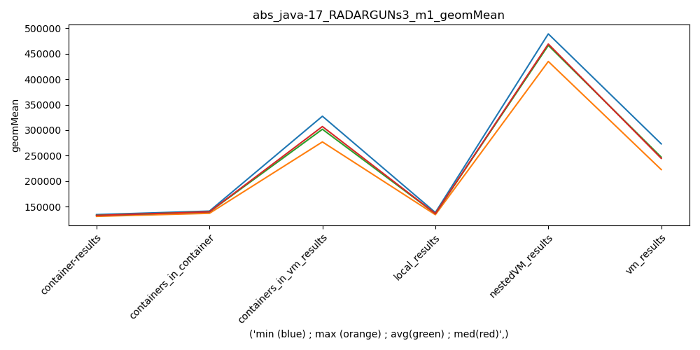
all runs of one jdk were made AVARAGE before processing
BasicOperations.Get.ResponseTimeMean
java-17 RADARGUNs3 BasicOperations.Get.ResponseTimeMean where all runs of one jdk were made AVARAGE before processing
MIN -65443.6 container-results
MIN -68789.6 containers_in_container
MIN -160134.8 containers_in_vm_results
MIN -67080.6 local_results
MIN -121934.2 vm_results
MAX -65064.2 container-results
MAX -68509.2 containers_in_container
MAX -155344.66666666666 containers_in_vm_results
MAX -66045.2 local_results
MAX -116948.6 vm_results
AVG -65278.079999999994 container-results
AVG -68667.48000000001 containers_in_container
AVG -157655.13333333336 containers_in_vm_results
AVG -66774.92 local_results
AVG -119364.31999999999 vm_results
MED -65328.8 container-results
MED -68720.8 containers_in_container
MED -157583.4 containers_in_vm_results
MED -66905.2 local_results
MED -118419.4 vm_results

BasicOperations.Put.ResponseTimeMean
java-17 RADARGUNs3 BasicOperations.Put.ResponseTimeMean where all runs of one jdk were made AVARAGE before processing
MIN -271011.4 container-results
MIN -285377.6 containers_in_container
MIN -641453.4 containers_in_vm_results
MIN -279676.2 local_results
MIN -474440.2 vm_results
MAX -269823.2 container-results
MAX -284084.0 containers_in_container
MAX -622153.6666666666 containers_in_vm_results
MAX -276822.2 local_results
MAX -450710.6 vm_results
AVG -270341.4 container-results
AVG -284582.24000000005 containers_in_container
AVG -631817.4133333333 containers_in_vm_results
AVG -278589.56 local_results
AVG -462500.76000000007 vm_results
MED -270317.2 container-results
MED -284264.2 containers_in_container
MED -630546.0 containers_in_vm_results
MED -278815.2 local_results
MED -459858.0 vm_results
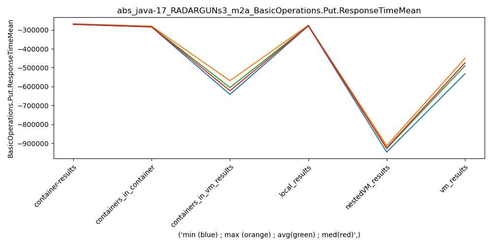
geomMean of all keys (benchmark meassured relativre accuracy)
{'MIN': [133176.4305612671, 140110.7096297781, 320498.0685094997, 136970.24239490854, 240521.28021204277, 1.0], 'MAX': [132498.4175356068, 139507.5896602045, 310883.0229584397, 135213.82164349913, 229586.5276429782, 1.0], 'AVG': [132843.39477938676, 139791.07723154296, 315609.3448258281, 136392.06568505077, 234959.75978214483, 1.0], 'MED': [132889.0450539848, 139767.17509973506, 315219.8955275507, 136580.3306447894, 233358.32628213632, 1.0]}
java-17 RADARGUNs3 geomMean where all runs of one jdk were made AVARAGE before processing
MIN 133176.4305612671 container-results
MIN 140110.7096297781 containers_in_container
MIN 320498.0685094997 containers_in_vm_results
MIN 136970.24239490854 local_results
MIN 240521.28021204277 nestedVM_results
MIN 1.0 vm_results
MAX 132498.4175356068 container-results
MAX 139507.5896602045 containers_in_container
MAX 310883.0229584397 containers_in_vm_results
MAX 135213.82164349913 local_results
MAX 229586.5276429782 nestedVM_results
MAX 1.0 vm_results
AVG 132843.39477938676 container-results
AVG 139791.07723154296 containers_in_container
AVG 315609.3448258281 containers_in_vm_results
AVG 136392.06568505077 local_results
AVG 234959.75978214483 nestedVM_results
AVG 1.0 vm_results
MED 132889.0450539848 container-results
MED 139767.17509973506 containers_in_container
MED 315219.8955275507 containers_in_vm_results
MED 136580.3306447894 local_results
MED 233358.32628213632 nestedVM_results
MED 1.0 vm_results
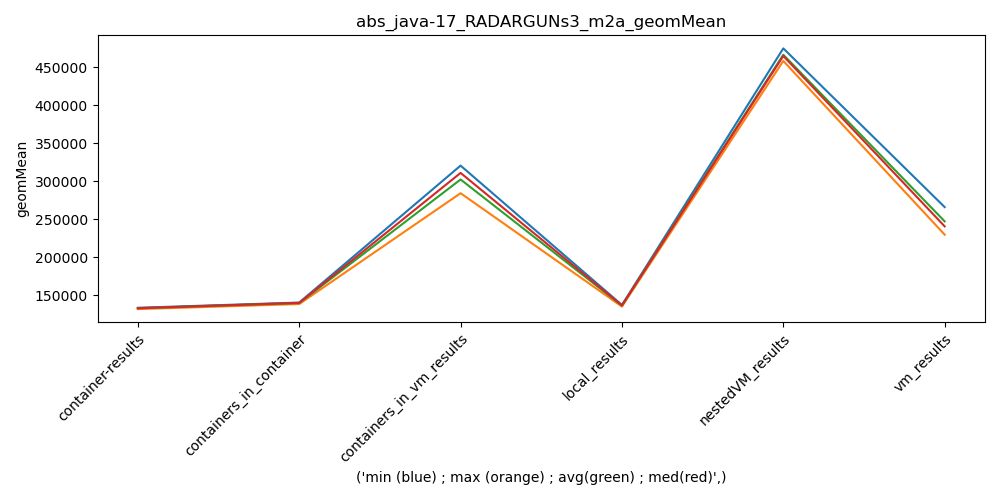
all runs of one jdk were made MEDIAN before processing
BasicOperations.Get.ResponseTimeMean
java-17 RADARGUNs3 BasicOperations.Get.ResponseTimeMean where all runs of one jdk were made MEDIAN before processing
MIN -65751.0 container-results
MIN -68914.0 containers_in_container
MIN -159645.0 containers_in_vm_results
MIN -67162.0 local_results
MIN -121685.0 vm_results
MAX -64979.0 container-results
MAX -68449.0 containers_in_container
MAX -155328.0 containers_in_vm_results
MAX -66021.0 local_results
MAX -116458.0 vm_results
AVG -65339.2 container-results
AVG -68706.4 containers_in_container
AVG -157455.6 containers_in_vm_results
AVG -66742.8 local_results
AVG -118834.4 vm_results
MED -65357.0 container-results
MED -68696.0 containers_in_container
MED -156572.0 containers_in_vm_results
MED -66829.0 local_results
MED -117691.0 vm_results

BasicOperations.Put.ResponseTimeMean
java-17 RADARGUNs3 BasicOperations.Put.ResponseTimeMean where all runs of one jdk were made MEDIAN before processing
MIN -270718.0 container-results
MIN -285257.0 containers_in_container
MIN -638986.0 containers_in_vm_results
MIN -279819.0 local_results
MIN -474756.0 vm_results
MAX -269742.0 container-results
MAX -283694.0 containers_in_container
MAX -623482.0 containers_in_vm_results
MAX -276471.0 local_results
MAX -446584.0 vm_results
AVG -270274.8 container-results
AVG -284390.4 containers_in_container
AVG -630447.6 containers_in_vm_results
AVG -278613.6 local_results
AVG -459429.0 vm_results
MED -270247.0 container-results
MED -284592.0 containers_in_container
MED -629741.0 containers_in_vm_results
MED -278609.0 local_results
MED -457194.0 vm_results

geomMean of all keys (benchmark meassured relativre accuracy)
{'MIN': [133416.5627574028, 140207.70627180234, 319391.48387206567, 137088.3061314859, 240355.32833702688, 1.0], 'MAX': [132391.71204422126, 139350.5314162813, 311198.02714027604, 135103.26380587555, 228053.23824054768, 1.0], 'AVG': [132889.19900488527, 139783.5490269152, 315067.4612310195, 136365.14137447297, 233657.8044012226, 1.0], 'MED': [132900.46342658103, 139822.50188006222, 314006.06340005604, 136452.04601250947, 231964.69355054878, 1.0]}
java-17 RADARGUNs3 geomMean where all runs of one jdk were made MEDIAN before processing
MIN 133416.5627574028 container-results
MIN 140207.70627180234 containers_in_container
MIN 319391.48387206567 containers_in_vm_results
MIN 137088.3061314859 local_results
MIN 240355.32833702688 nestedVM_results
MIN 1.0 vm_results
MAX 132391.71204422126 container-results
MAX 139350.5314162813 containers_in_container
MAX 311198.02714027604 containers_in_vm_results
MAX 135103.26380587555 local_results
MAX 228053.23824054768 nestedVM_results
MAX 1.0 vm_results
AVG 132889.19900488527 container-results
AVG 139783.5490269152 containers_in_container
AVG 315067.4612310195 containers_in_vm_results
AVG 136365.14137447297 local_results
AVG 233657.8044012226 nestedVM_results
AVG 1.0 vm_results
MED 132900.46342658103 container-results
MED 139822.50188006222 containers_in_container
MED 314006.06340005604 containers_in_vm_results
MED 136452.04601250947 local_results
MED 231964.69355054878 nestedVM_results
MED 1.0 vm_results
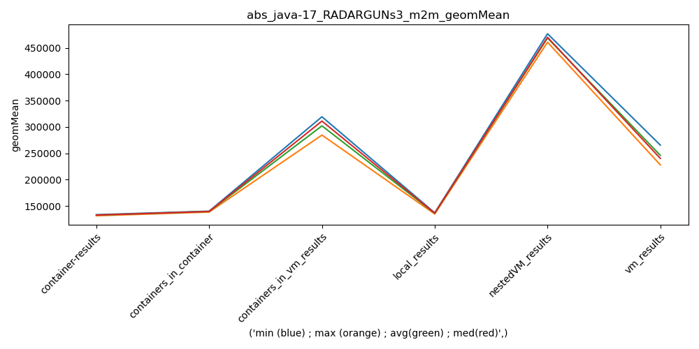
geomMean of all metrics from geomMean of all keys
{'MIN': [133614.6480591478, 140488.83126425275, 322417.6640508221, 137465.97365850385, 244423.24655506713, 1.0], 'MAX': [132272.96865394502, 138900.16194615464, 309226.3212080991, 134986.90263814622, 226722.84551956237, 1.0], 'AVG': [132858.66110008492, 139788.56778495244, 315565.4699708825, 136383.09032424208, 234524.97058113114, 1.0], 'MED': [132878.6720056994, 139804.66529975733, 315034.8472376476, 136468.22940997538, 233326.01537940287, 1.0]}
java-17 RADARGUNs3 geomMean geomMean
MIN 133614.6480591478 container-results
MIN 140488.83126425275 containers_in_container
MIN 322417.6640508221 containers_in_vm_results
MIN 137465.97365850385 local_results
MIN 244423.24655506713 nestedVM_results
MIN 1.0 vm_results
MAX 132272.96865394502 container-results
MAX 138900.16194615464 containers_in_container
MAX 309226.3212080991 containers_in_vm_results
MAX 134986.90263814622 local_results
MAX 226722.84551956237 nestedVM_results
MAX 1.0 vm_results
AVG 132858.66110008492 container-results
AVG 139788.56778495244 containers_in_container
AVG 315565.4699708825 containers_in_vm_results
AVG 136383.09032424208 local_results
AVG 234524.97058113114 nestedVM_results
AVG 1.0 vm_results
MED 132878.6720056994 container-results
MED 139804.66529975733 containers_in_container
MED 315034.8472376476 containers_in_vm_results
MED 136468.22940997538 local_results
MED 233326.01537940287 nestedVM_results
MED 1.0 vm_results
geomMean of all benchamrks from geomMean of all metrics and all keys
{'MIN': [7025.306038209893, 8252.577266455844, 10246.43929424137, 7072.810793147118, 20819.84037702397, 189.59878969810853], 'MAX': [7011.16042679594, 8391.306872571675, 10385.929656639351, 6978.1207607706465, 20437.12080642293, 188.63036411516376], 'AVG': [7007.658107260968, 8317.834355837575, 10191.841566675384, 7009.215307261042, 20588.2471129332, 188.78110584059496], 'MED': [7011.782476592484, 8322.787799880143, 10141.494623374525, 7013.017409569811, 20546.676554795427, 188.52712986167074]}
java-17 geomMean geomMean geomMean
MIN 7025.306038209893 container-results
MIN 8252.577266455844 containers_in_container
MIN 10246.43929424137 containers_in_vm_results
MIN 7072.810793147118 local_results
MIN 20819.84037702397 nestedVM_results
MIN 189.59878969810853 vm_results
MAX 7011.16042679594 container-results
MAX 8391.306872571675 containers_in_container
MAX 10385.929656639351 containers_in_vm_results
MAX 6978.1207607706465 local_results
MAX 20437.12080642293 nestedVM_results
MAX 188.63036411516376 vm_results
AVG 7007.658107260968 container-results
AVG 8317.834355837575 containers_in_container
AVG 10191.841566675384 containers_in_vm_results
AVG 7009.215307261042 local_results
AVG 20588.2471129332 nestedVM_results
AVG 188.78110584059496 vm_results
MED 7011.782476592484 container-results
MED 8322.787799880143 containers_in_container
MED 10141.494623374525 containers_in_vm_results
MED 7013.017409569811 local_results
MED 20546.676554795427 nestedVM_results
MED 188.52712986167074 vm_results
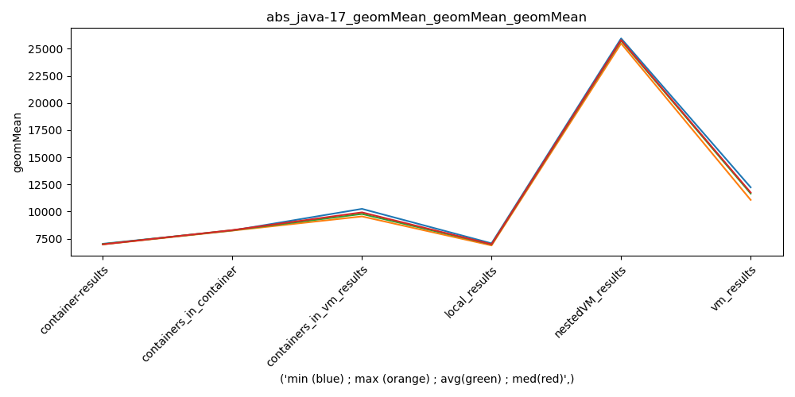
geomMean of all above (with all, thus wrong))
{'MIN': [2422641511480193.5, 4586437111378490.0, 1.261269816068662e+16, 2366470453009946.0, 1.9797464633385632e+17, 1343874908.56486], 'MAX': [2247242733558297.8, 4640991595581438.0, 1.2726356414834104e+16, 2178395883708237.2, 1.800590633481175e+17, 1293865443.047288], 'AVG': [2319699928625981.0, 4597086017757293.0, 1.250241345624642e+16, 2251972683450490.5, 1.8549897047392074e+17, 1304214897.9164498], 'MED': [2327778409570334.5, 4630369317069430.0, 1.2403408292415264e+16, 2256882445173708.0, 1.842393929569098e+17, 1297005550.6811767]}
geomMean(with all thus wrong) geomMean geomMean geomMean
MIN 2422641511480193.5 container-results
MIN 4586437111378490.0 containers_in_container
MIN 16.0 containers_in_vm_results
MIN 2366470453009946.0 local_results
MIN 17.0 nestedVM_results
MIN 1343874908.56486 vm_results
MAX 2247242733558297.8 container-results
MAX 4640991595581438.0 containers_in_container
MAX 16.0 containers_in_vm_results
MAX 2178395883708237.2 local_results
MAX 17.0 nestedVM_results
MAX 1293865443.047288 vm_results
AVG 2319699928625981.0 container-results
AVG 4597086017757293.0 containers_in_container
AVG 16.0 containers_in_vm_results
AVG 2251972683450490.5 local_results
AVG 17.0 nestedVM_results
AVG 1304214897.9164498 vm_results
MED 2327778409570334.5 container-results
MED 4630369317069430.0 containers_in_container
MED 16.0 containers_in_vm_results
MED 2256882445173708.0 local_results
MED 17.0 nestedVM_results
MED 1297005550.6811767 vm_results
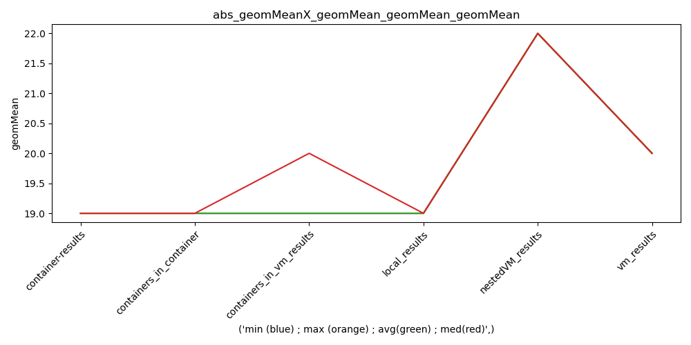
geomMean of all above
{'MIN': [342969625346.9086, 555394165875.1932, 1198030838468.4756, 334694272877.8503, 9329719476318.195, 6976128.091917479], 'MAX': [329834000331.11615, 567797024364.9222, 1200519935902.5095, 323281142700.93994, 8757570700631.639, 6823332.361598312], 'AVG': [334424825051.1925, 558642180430.1287, 1178747533394.978, 327062009338.3589, 8932008072695.12, 6859693.084769219], 'MED': [334514754395.93634, 560351011888.7151, 1167179640880.1394, 327341972012.926, 8871001034608.256, 6830137.761235861]}
geomMean geomMean geomMean geomMean
MIN 342969625346.9086 container-results
MIN 555394165875.1932 containers_in_container
MIN 1198030838468.4756 containers_in_vm_results
MIN 334694272877.8503 local_results
MIN 9329719476318.195 nestedVM_results
MIN 6976128.091917479 vm_results
MAX 329834000331.11615 container-results
MAX 567797024364.9222 containers_in_container
MAX 1200519935902.5095 containers_in_vm_results
MAX 323281142700.93994 local_results
MAX 8757570700631.639 nestedVM_results
MAX 6823332.361598312 vm_results
AVG 334424825051.1925 container-results
AVG 558642180430.1287 containers_in_container
AVG 1178747533394.978 containers_in_vm_results
AVG 327062009338.3589 local_results
AVG 8932008072695.12 nestedVM_results
AVG 6859693.084769219 vm_results
MED 334514754395.93634 container-results
MED 560351011888.7151 containers_in_container
MED 1167179640880.1394 containers_in_vm_results
MED 327341972012.926 local_results
MED 8871001034608.256 nestedVM_results
MED 6830137.761235861 vm_results
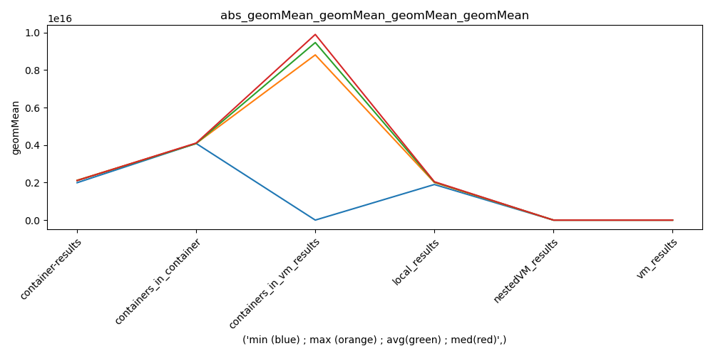
{kind=link}
{kind=link}
{kind=link}
{kind=link}
{kind=link}
{kind=link}
{kind=link}
{kind=link}
{kind=link}
{kind=link}
{kind=link}
{kind=link}
{kind=link}
{kind=link}
{kind=link}
{kind=link}
{kind=link}
{kind=link}
{kind=link}
{kind=link}
{kind=link}
{kind=link}
{kind=link}
{kind=link}
{kind=link}
{kind=link}
{kind=link}
{kind=link}
{kind=link}
{kind=link}
{kind=link}
{kind=link}
{kind=link}
{kind=link}
{kind=link}
{kind=link}
{kind=link}
{kind=link}
{kind=link}
{kind=link}
{kind=link}
{kind=link}
{kind=link}
{kind=link}
{kind=link}
{kind=link}
{kind=link}
{kind=link}
{kind=link}
{kind=link}
{kind=link}
{kind=link}
{kind=link}
{kind=link}
{kind=link}
{kind=link}
{kind=link}
{kind=link}
{kind=link}
{kind=link}
{kind=link}
{kind=link}
{kind=link}
{kind=link}
{kind=link}
{kind=link}
{kind=link}
{kind=link}